最优化方法，与需求、供给和竞争均衡
把“最优化”写成可计算的数学问题（目标函数、约束、一阶条件、边际分析），再用它推导需求曲线、供给曲线，最后合成竞争市场的均衡。
本讲要点
- 目标函数与约束
- 边际分析
- 一阶条件
- 需求曲线
- 供给曲线
- 比较静态
- 竞争均衡
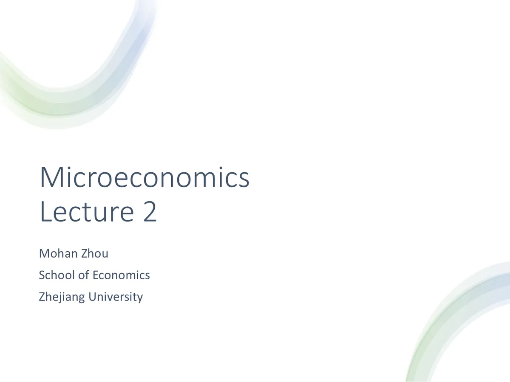
第二讲的开场页，标题只写了「微观经济学 第二讲」，署名 Mohan Zhou，浙江大学经济学院。
上一讲我们确定了这门课的主题是选择；这一讲要干两件具体的事：
这两件事看着不相关，其实是同一个假设用了两次：消费者在约束下最优化，得到需求曲线；厂商在成本约束下最优化，得到供给曲线；两条曲线一交，就是本讲后半段的全部内容。
幻灯片原文 / 板书
Microeconomics Lecture 2 --- Mohan Zhou School of Economics Zhejiang University
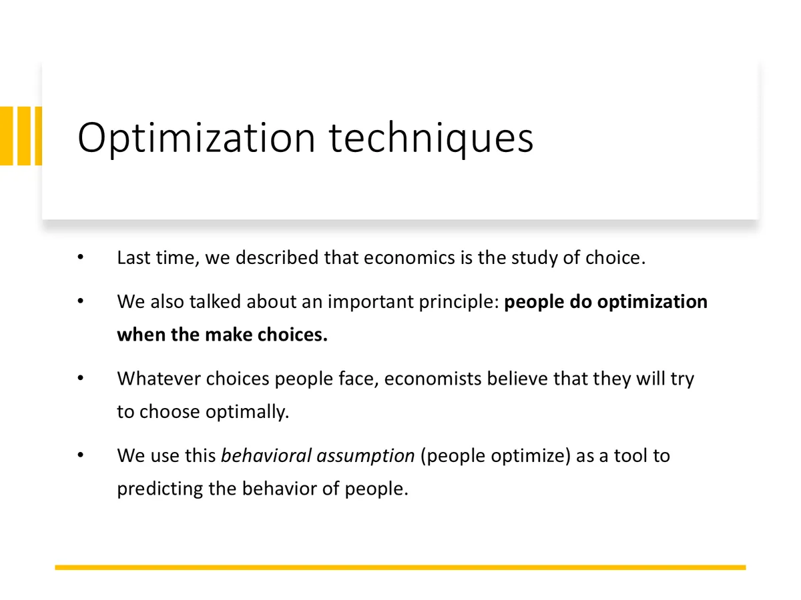
先回顾上一讲的结论，作为本讲的起点。
注意第三点的措辞：这是一个用来预测的假设，不是对人性的道德判断。我们不需要相信每个人每时每刻都在精算，只需要相信——当约束和收益变化时，人的行为会朝最优化所预测的方向变。检验模型的标准是预测力，不是心理真实性。
幻灯片原文 / 板书
Optimization techniques --- Last time, we described that economics is the study of choice. We also talked about an important principle: people do optimization when the make choices. Whatever choices people face, economists believe that they will try to choose optimally. We use this behavioral assumption (people optimize) as a tool to predicting the behavior of people.
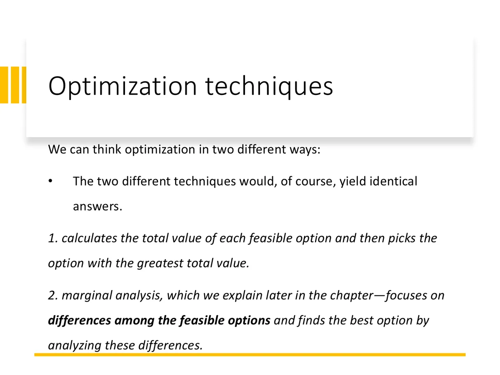
最优化有两条技术路线，答案必然相同：
- 总量法（total value）：把每个可行选项的总价值算出来，挑总价值最大的那个。
- 边际分析法（marginal analysis）：不比较绝对水平，只比较选项之间的差异，通过分析差异找到最好的选项。
演讲者备注补了一句很实用的建议：既然两条路通向同一个答案，做题时就挑你觉得顺手的。总量法直观但计算量大（选项多时要一个个算），边际分析法快但需要理解「增量」这个概念。这一讲先用同一个租房例子把两条路都走一遍。
幻灯片原文 / 板书
Optimization techniques --- We can think optimization in two different ways: The two different techniques would, of course, yield identical answers. 1. calculates the total value of each feasible option and then picks the option with the greatest total value. 2. marginal analysis, which we explain later in the chapter—focuses on differences among the feasible options and finds the best option by analyzing these differences.
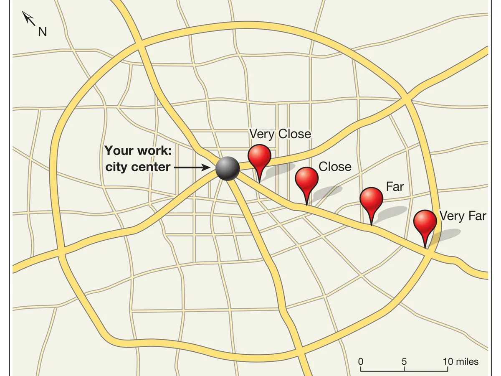
例子登场：一个在市中心上班的人，要在四个公寓里选一个。
地图上标出了位置：市中心（Your work: city center）是那个灰色大头针，四个候选公寓沿一条出城的路排开，由近到远分别叫 Very Close、Close、Far、Very Far。右下角比例尺 0–10 英里，最远那个离市中心在 10 英里量级。
这个例子的设计意图很清楚：越远的房子越便宜，但通勤时间越长。两类成本朝相反方向变化，所以存在一个「不远不近」的最优点——这正是所有最优化问题的标准结构。
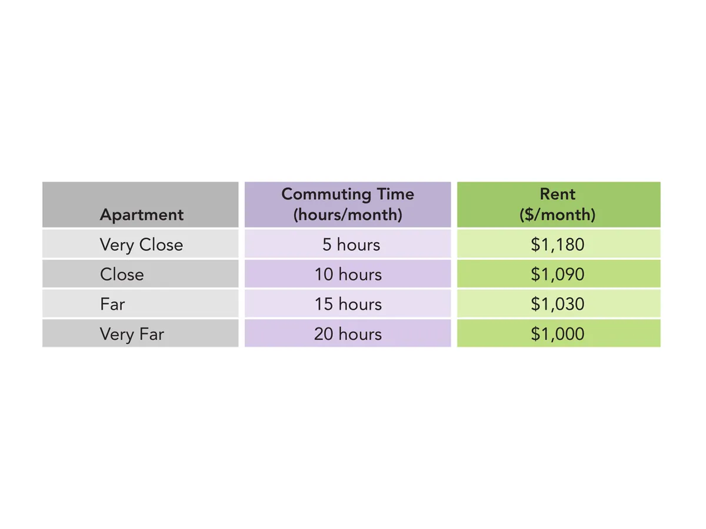
先把数据摆出来。三列信息：公寓、每月通勤时间、每月房租。
| 公寓 | 通勤时间（小时/月） | 房租（美元/月） |
|---|---|---|
| Very Close | 5 | 1,180 |
| Close | 10 | 1,090 |
| Far | 15 | 1,030 |
| Very Far | 20 | 1,000 |
读表先看两个方向：往外搬一档，通勤时间每次加 5 小时，而房租分别只降 90、60、30 美元。
这里有个关键假设（备注里明确交代了）：四个公寓的收益相同——面积、采光、景观都一样，所以我们只比成本。收益相同时，「净收益最大」等价于「成本最小」，问题就被简化成一个纯粹的成本比较。
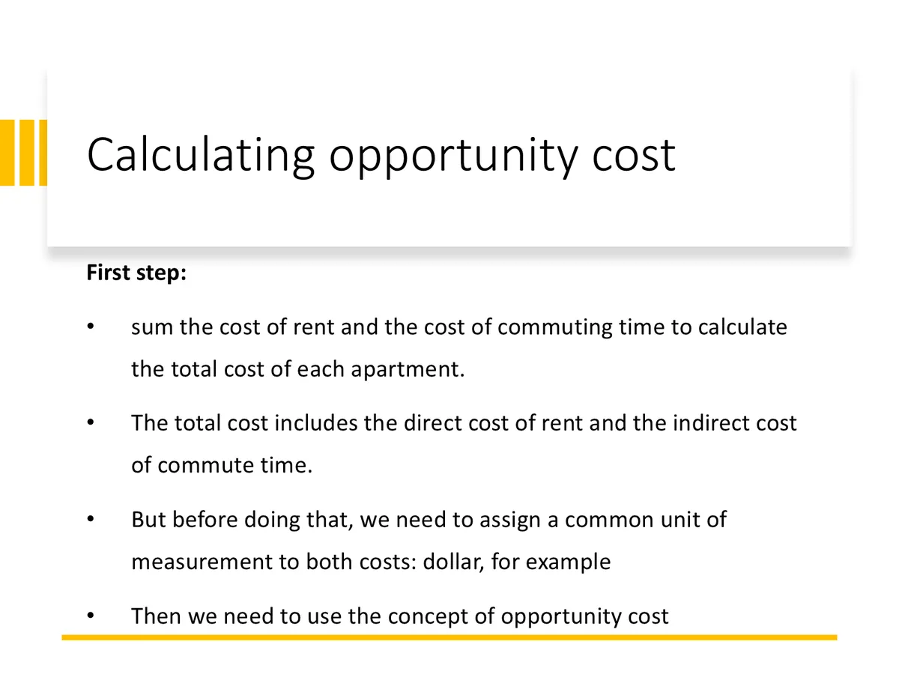
第一步不是加总，而是统一单位。
房租的单位是美元/月，通勤时间的单位是小时/月，两种东西不能直接相加。必须先把时间折算成钱，用的是机会成本（opportunity cost）：这一小时如果不用于通勤，能拿去干什么、值多少钱。
于是每个公寓的总成本 = 直接成本（rent，看得见的房租）+ 间接成本（commute time 折算成的钱）。这一步是本讲最容易出错的地方：多数人只把房租当成本，把每天两小时通勤当成「免费」。经济学的第一个动作，就是给这部分定价。
幻灯片原文 / 板书
Calculating opportunity cost --- First step: sum the cost of rent and the cost of commuting time to calculate the total cost of each apartment. The total cost includes the direct cost of rent and the indirect cost of commute time. But before doing that, we need to assign a common unit of measurement to both costs: dollar, for example Then we need to use the concept of opportunity cost
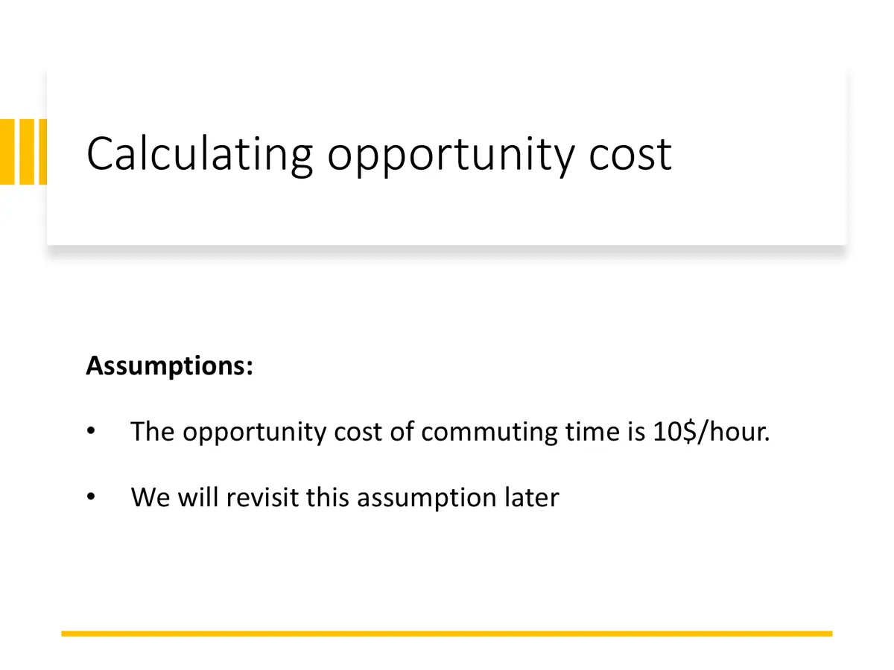
为了让时间能折成钱，需要一个假设：通勤时间的机会成本是 10 美元/小时。
这个数字不是从天上掉下来的，它大致对应这个人的税后工资率——如果他一小时能挣 10 美元，那花一小时通勤就放弃了 10 美元。
课件特意写了一句「我们稍后会回到这个假设」。这是提示：假设是可以变的，而变了之后结论会不会变，正是经济学要检验的东西。下一页先按 10 美元算完，后面再用 15 美元重算一遍做对比。
幻灯片原文 / 板书
Calculating opportunity cost --- Assumptions: The opportunity cost of commuting time is 10$/hour. We will revisit this assumption later
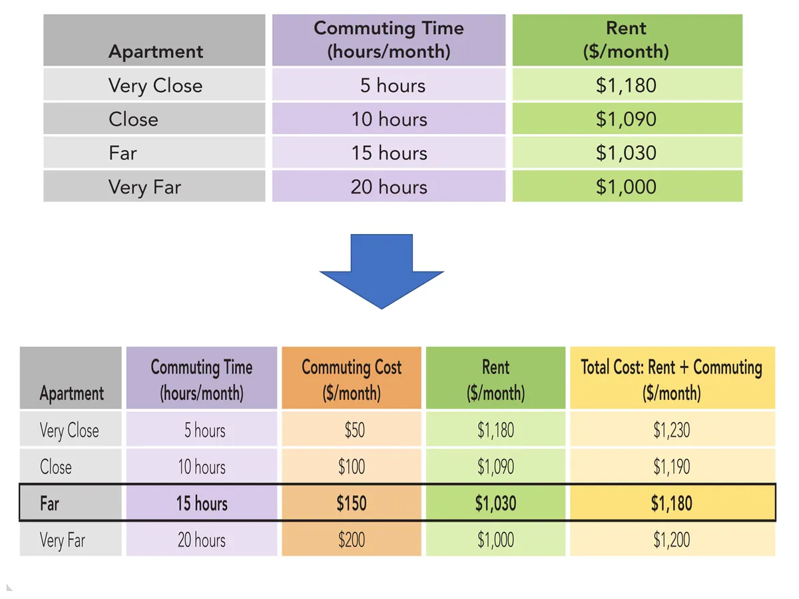
按 10 美元/小时折算，表格从三列变成五列：
| 公寓 | 通勤时间 | 通勤成本 | 房租 | 总成本 |
|---|---|---|---|---|
| Very Close | 5 小时 | 50 | 1,180 | 1,230 |
| Close | 10 小时 | 100 | 1,090 | 1,190 |
| Far | 15 小时 | 150 | 1,030 | 1,180 |
| Very Far | 20 小时 | 200 | 1,000 | 1,200 |
读法：通勤成本这一列每次加 50（每小时 10 美元 × 5 小时），房租那一列每次减 90、60、30。两者相抵，总成本先降后升，最低点是 Far 的 1,180。
注意比较边际：往外搬的前两档，省下的房租（90、60）大于多花的通勤成本（50），划算；第三档只省 30 却要多花 50，不划算。这个「边际上划不划算」的直觉，就是后面边际分析的全部内容。
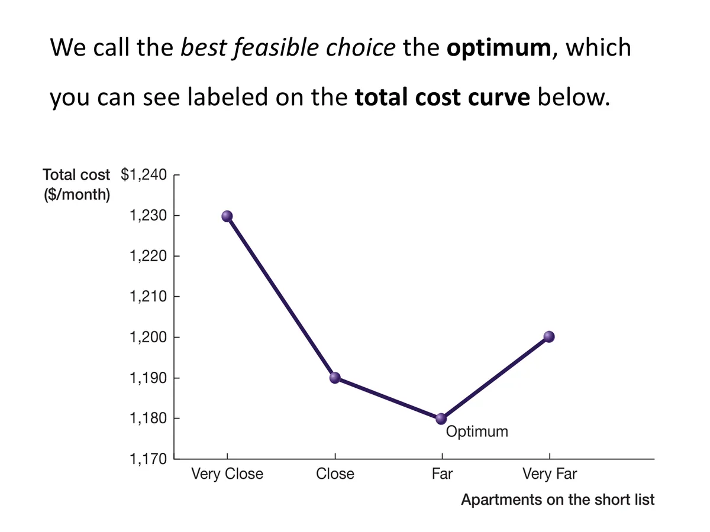
把上表的最后一列画成图，就是总成本曲线。
横轴是四个公寓（按离市中心的远近排序），纵轴是每月总成本（美元）。四个点连成一条先下降后上升的折线：1,230 → 1,190 → 1,180 → 1,200。
最低点被标了出来，叫 optimum（最优）。定义是：在所有可行（feasible）的选择里最好的那一个。注意「可行」两个字——你当然想住免费的海景房，但它不在选项里，不在可行集里的东西不参与比较。
这条 U 形曲线是最优化问题的标准图形语言：后面讲边际成本、讲厂商产量决策，画的都是同一个形状。
幻灯片原文 / 板书
We call the best feasible choice the optimum, which you can see labeled on the total cost curve below.
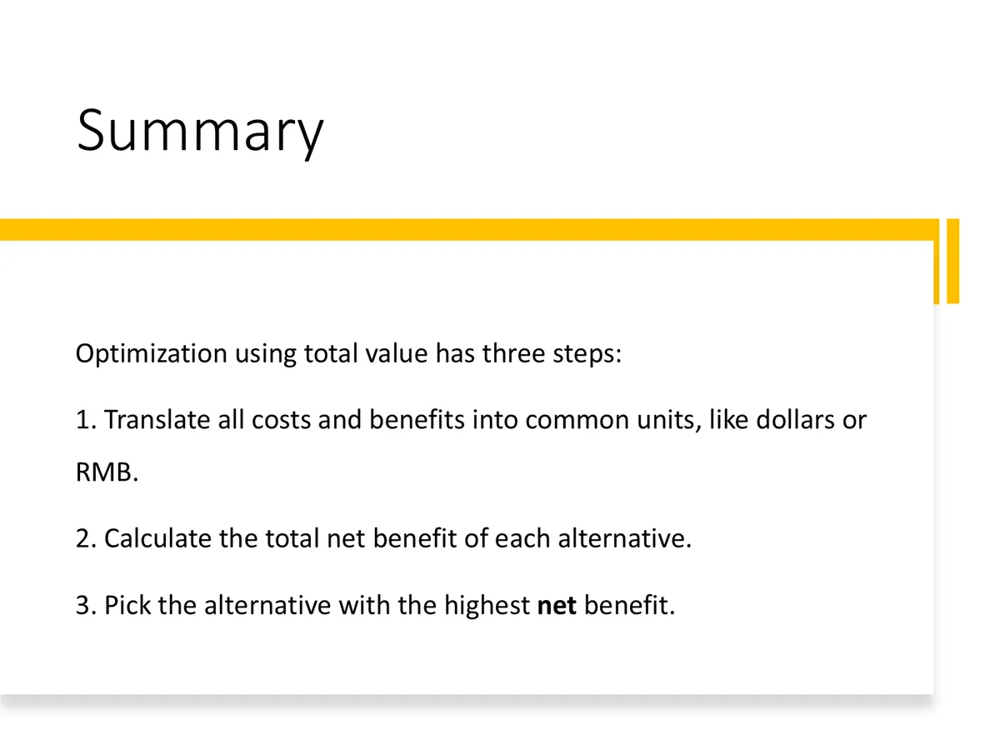
把刚才做的事抽象成三步，这就是总量法（optimization using total value）的标准流程：
- 把所有成本和收益换算成共同的单位（美元、人民币都行，关键是统一）。
- 算出每个备选方案的总净收益（total net benefit）= 总收益 − 总成本。
- 选总净收益最高的那个方案。
第三步也可以说成「选总成本最低」，前提是各方案收益相同（本例正是如此）。
考试里最常见的失分点不是算错，而是漏掉某一项成本（比如忘了把通勤时间折成钱），或者单位没统一就相加。
幻灯片原文 / 板书
Summary --- Optimization using total value has three steps: 1. Translate all costs and benefits into common units, like dollars or RMB. 2. Calculate the total net benefit of each alternative. 3. Pick the alternative with the highest net benefit.
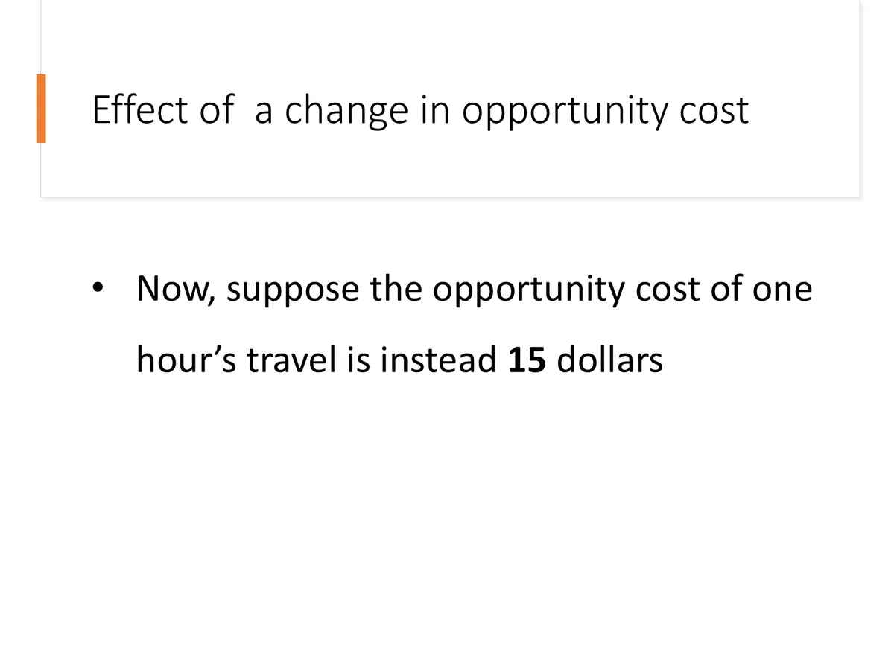
现在做一次敏感性检验：如果这个人的时间更值钱，一小时的机会成本是 15 美元而不是 10 美元，最优选择会变吗？
直觉上应该会：时间变贵，就应该住得离公司近一点。但「应该」不算结论，得算出来看。下一页把整张表重算一遍。
这也是经济学论文里常见的做法——不是给一个答案，而是问「答案对假设有多敏感」。一个结论如果在合理范围的假设变动下都成立，它才值得相信。
幻灯片原文 / 板书
Effect of a change in opportunity cost --- Now, suppose the opportunity cost of one hour’s travel is instead 15 dollars
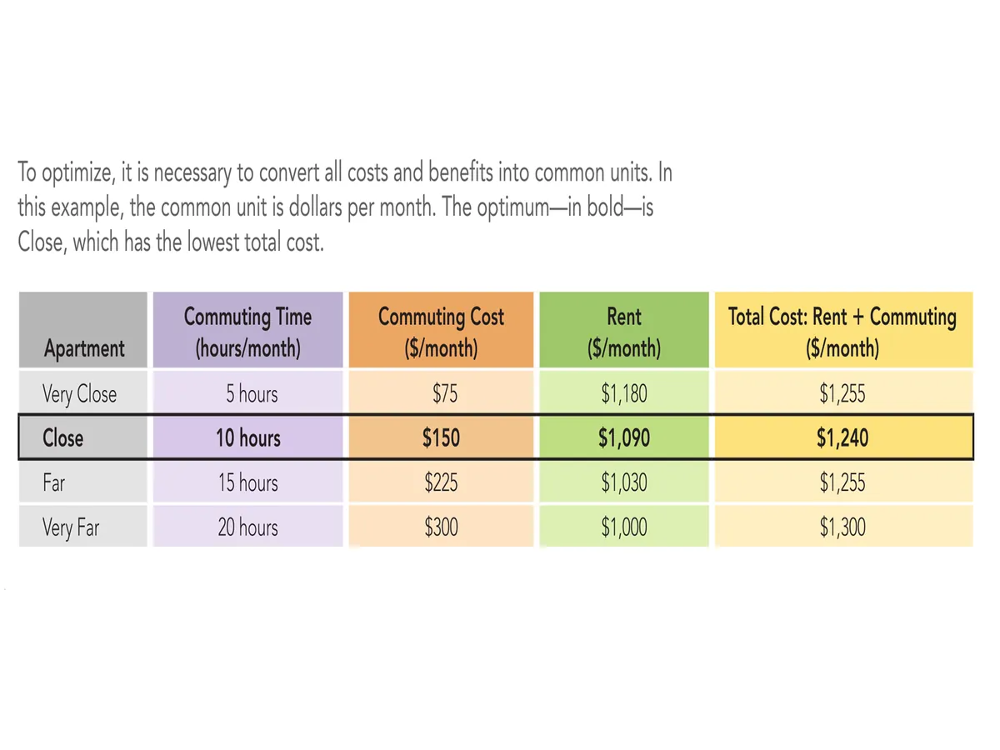
按 15 美元/小时重算：
| 公寓 | 通勤时间 | 通勤成本 | 房租 | 总成本 |
|---|---|---|---|---|
| Very Close | 5 小时 | 75 | 1,180 | 1,255 |
| Close | 10 小时 | 150 | 1,090 | 1,240 |
| Far | 15 小时 | 225 | 1,030 | 1,255 |
| Very Far | 20 小时 | 300 | 1,000 | 1,300 |
通勤成本这一列每次加 75，而房租每次只省 90、60、30。
结果：最优从 Far 变成了 Close（1,240）。比较边际就能看出为什么——从 Very Close 搬到 Close，省 90 美元房租、多花 75 美元通勤费，还划算；再往外搬一档省 60、多花 75，开始亏了。
还有一个细节值得注意：Very Close 和 Far 的总成本都是 1,255，并列第二。这说明最优点两侧的两条路可以「一样好」，但 Close 仍然严格优于它们。做题时如果只看「谁更便宜」而不逐行算，很容易把并列误当成最优。
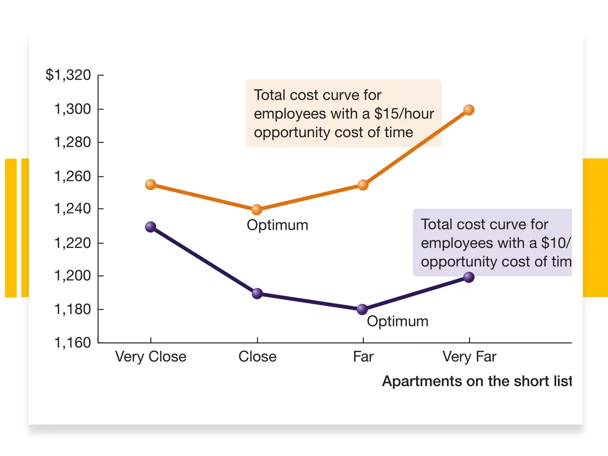
两条总成本曲线画在同一张图上，对比非常直观。
- 深紫色是 10 美元/小时的曲线，最低点在 Far（1,180）。
- 橙色是 15 美元/小时的曲线，整体上移，最低点左移到 Close（1,240）。
两件事同时发生：时间变贵让每个选项都更贵（曲线抬高），也让「远」这个特征更昂贵（曲线左段变陡），于是最优点向市中心移动。
这就是「比较静态」的雏形：外生参数（时间价格）变化 → 整条目标函数变化 → 最优选择变化。后面讲需求曲线移动时，用的是同一套语言。
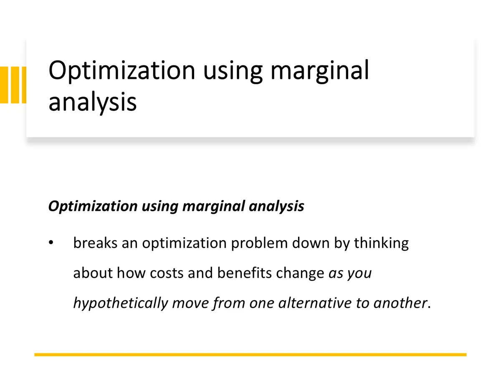
换第二条技术路线：边际分析法（optimization using marginal analysis）。
它的做法是：不孤立地看每个选项的绝对水平，而是看从一个选项移动到下一个选项时，成本和收益改变了多少，通过分析这些差异来定位最优。
为什么要换一种方法？因为现实中的选项常常是连续的一大片（比如「每天生产多少件」），没法一个个列出来算总量。边际分析把「选哪个」变成「往哪个方向再走一步」，这个思路可以处理连续变量，也是后面所有「MR = MC」「MB = MC」的源头。
幻灯片原文 / 板书
Optimization using marginal analysis --- Optimization using marginal analysis breaks an optimization problem down by thinking about how costs and benefits change as you hypothetically move from one alternative to another.
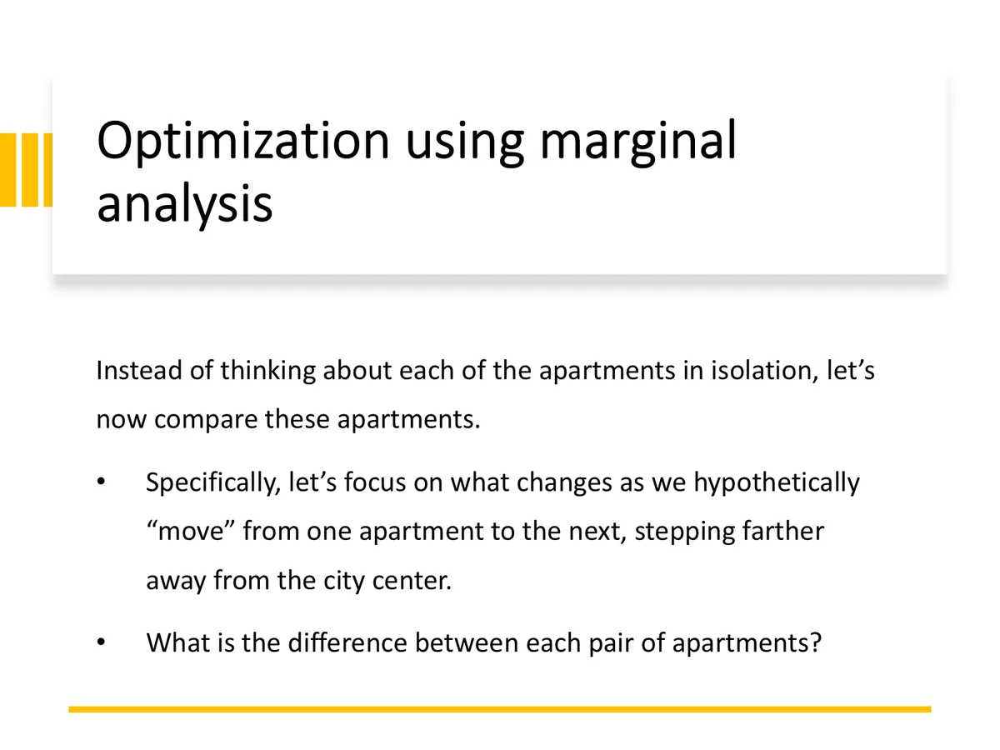
把边际分析用在同一个租房例子上。
不要孤立地评价四个公寓，而是比较相邻的两个：从 Very Close 搬到 Close，从 Close 搬到 Far，从 Far 搬到 Very Far——也就是沿着远离市中心的方向一站一站地「移动」。
每一站只问一个问题：这一步的得失是多少？ 房租省了多少，通勤费多了多少，净的变化是正还是负。
如果这一步净收益为正，就继续往远处搬；一旦为负，就停下。停下的位置就是最优。这个方法只需要看差值，不需要把四行都算成总量。
幻灯片原文 / 板书
Optimization using marginal analysis --- Instead of thinking about each of the apartments in isolation, let’s now compare these apartments. Specifically, let’s focus on what changes as we hypothetically “move” from one apartment to the next, stepping farther away from the city center. What is the difference between each pair of apartments?
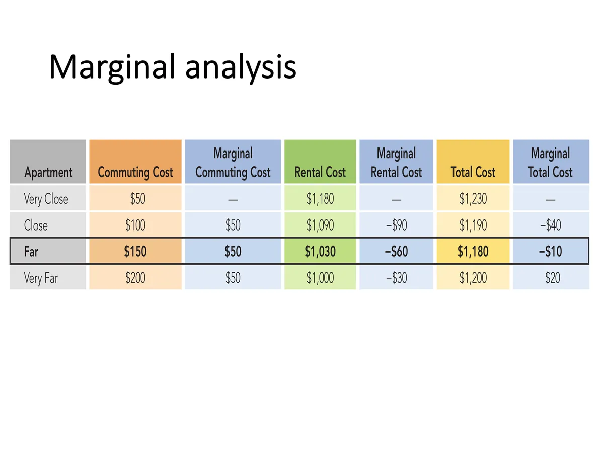
过渡页，只写了两个词：Marginal analysis（边际分析）。
下一页把「每一步的得失」画到图上，你会看到它其实就是总成本曲线的斜率：曲线下降时斜率是负的（这一步划算），曲线上升时斜率是正的（这一步不划算），斜率由负转正的那个点，就是最低点。
这句记住：边际量是总量曲线的斜率。这一句能省掉后面很多死记硬背。
幻灯片原文 / 板书
Marginal analysis
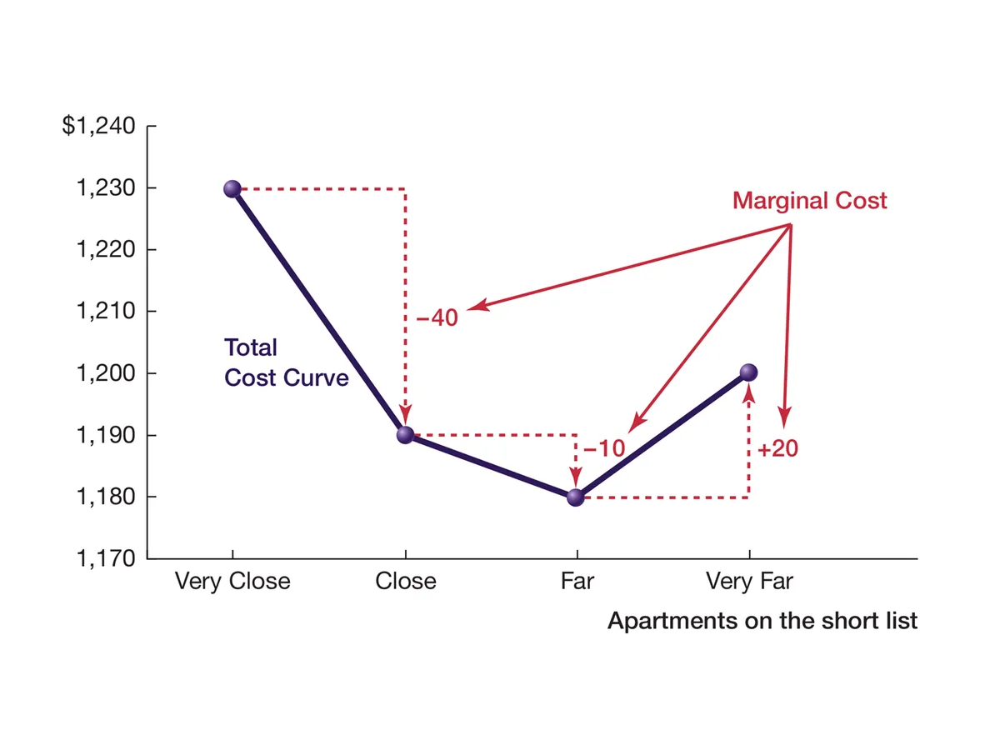
图上把每一步的得失标了出来，红字就是边际成本（marginal cost）：
- Very Close → Close：成本变化 −40（省了 40 美元）。
- Close → Far：成本变化 −10（又省 10 美元）。
- Far → Very Far：成本变化 +20（多花 20 美元）。
读法：只要边际成本是负的，往外搬就划算，继续搬；到 Far 之后边际成本转正，再搬就亏。所以最优点停在 Far，也就是边际成本由负转正的拐点处。
注意 −40、−10、+20 是差额，不是总量。边际分析看的永远是差额。本例的边际成本在递增（从 −40 到 −10 到 +20），所以曲线是凸的、有唯一最低点。
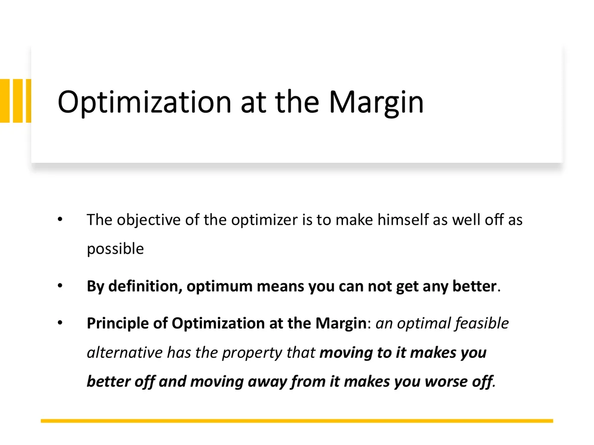
边际最优化原理（Principle of Optimization at the Margin）：
一个最优的可行选择具有这样的性质：移向它使你变得更好，移离它使你变得更差。
换个说法：最优点是「无法再改进」的位置。如果还能通过移动变得更好，那就不是最优；如果移动后会变差，说明已经在顶上。
这个定义的好处是不依赖具体函数形式，也不要求选项是离散的。它是后面所有一阶条件的文字版：在连续情形下，「移向它更好、移离它更差」就写成「边际收益 = 边际成本」，再往下就是求导令其为零。
幻灯片原文 / 板书
Optimization at the Margin --- The objective of the optimizer is to make himself as well off as possible By definition, optimum means you can not get any better. Principle of Optimization at the Margin: an optimal feasible alternative has the property that moving to it makes you better off and moving away from it makes you worse off.
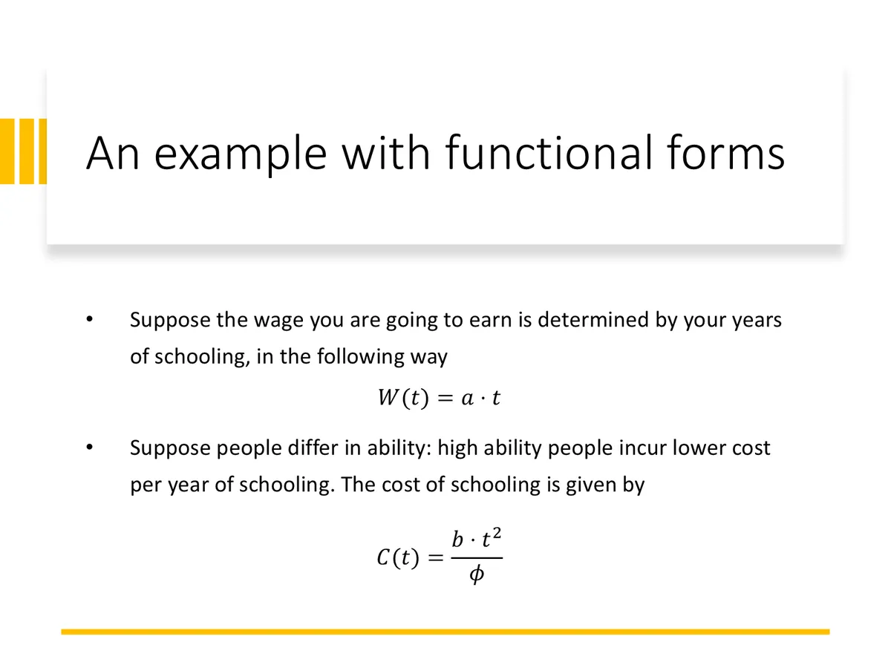
进入函数形式（functional forms）的例子，为后面用微积分做准备。
假设一个人受教育的年数是 t，工资由受教育年限决定：
- 收益：
W(t) = a · t——多读一年，工资增加 a，线性增长。 - 成本：
C(t) = b · t² / φ——成本随年限平方增长。
为什么成本是平方？因为读书的成本有两块：学费、书本这些直接支出，以及放弃的工资（机会成本）。年限越长，放弃的工资越高，所以总成本上升得越来越快。平方项就是「越读越贵」的数学表达。
幻灯片原文 / 板书
An example with functional forms
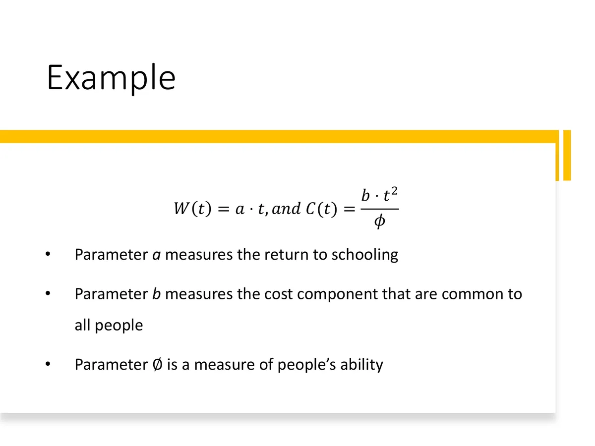
同一组函数，逐个参数解释含义：
a：教育回报率（return to schooling），多读一年能多挣多少。b：所有人都一样的成本系数（学费、书本等共同成本）。φ（phi）：能力的度量。能力越高，φ 越大，同样年限的成本越低。
求解：净收益 W(t) − C(t) = a·t − b·t²/φ。边际收益 MB = a，边际成本 MC = 2b·t/φ。令 MB = MC：
a = 2b·t/φ，解得 t* = a·φ / (2b)
结论：能力 φ 越强、回报 a 越高，最优受教育年限越长。这个式子把「为什么有人读到博士、有人高中毕业就工作」讲成了一个最优化结果。
幻灯片原文 / 板书
Example
转入本讲第二块：需求、供给与竞争均衡（Demand, supply and competitive equilibrium）。
上一部分的主角是一个人：给定选项和价格，他怎么选最优。这一部分的主角是很多人：每个人的最优选择加总起来，会在市场上形成什么价格、成交多少数量。
衔接点在这里：消费者在给定价格下选最优购买量，这个「最优购买量」就是需求量；所有消费者的需求量按价格加起来，就是需求曲线。所以需求曲线不是假设出来的，是从第一部分的最优化推出来的。
幻灯片原文 / 板书
Demand, supply and competitive equilibrium
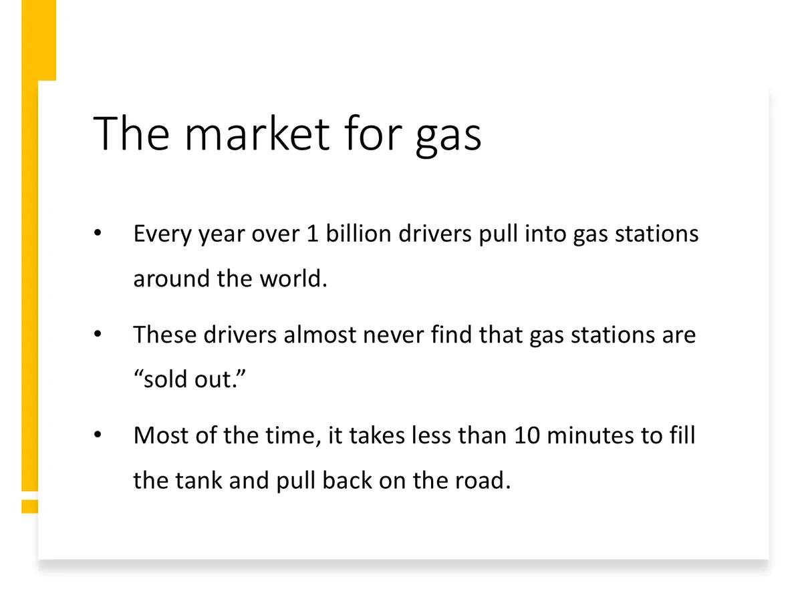
先看一个我们每天都在依赖、却很少去想的市场：汽油市场。
- 全世界每年有超过 10 亿司机开进加油站。
- 他们几乎从来没有遇到「卖完了」（sold out）。
- 大多数时候，加满油、开回路上，不超过 10 分钟。
这三个事实放在一起，是一个了不起的成就。你不需要预约、不需要排队登记、不需要认识站长，油就在那儿。
这一页的作用是制造疑问：这么顺滑的供给，是谁安排的？
幻灯片原文 / 板书
The market for gas --- Every year over 1 billion drivers pull into gas stations around the world. These drivers almost never find that gas stations are “sold out.” Most of the time, it takes less than 10 minutes to fill the tank and pull back on the road.
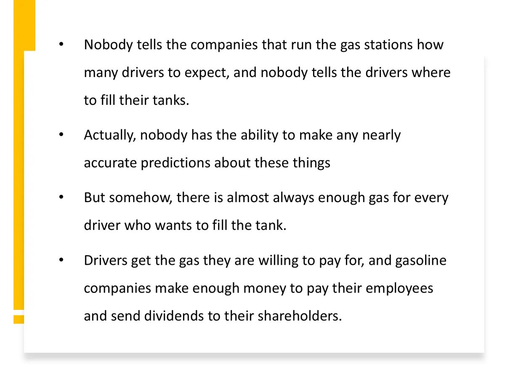
答案有点反直觉：没有人安排。
- 没有人告诉加油站老板今天会有多少司机来。
- 没有人告诉司机该去哪个站加油。
- 甚至没有人有能力做出接近准确的预测。
但结果是：几乎总有足够的汽油给每一个想加油的司机；司机付他愿意付的钱拿到油；石油公司赚到足够的钱发工资、给股东分红。
备注里老师说了一句：这个体系的效率令人惊叹。这一讲剩下的内容，就是解释这台「没人指挥却运转良好」的机器靠什么运转——靠价格。
幻灯片原文 / 板书
Nobody tells the companies that run the gas stations how many drivers to expect, and nobody tells the drivers where to fill their tanks. Actually, nobody has the ability to make any nearly accurate predictions about these things But somehow, there is almost always enough gas for every driver who wants to fill the tank. Drivers get the gas they are willing to pay for, and gasoline companies make enough money to pay their employees and send dividends to their shareholders.
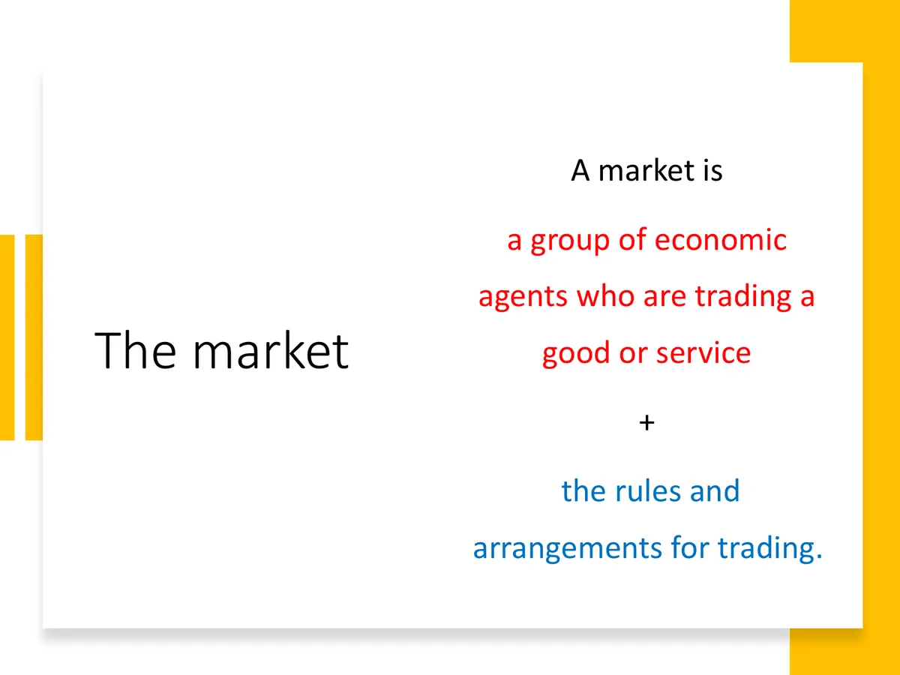
市场（market）的定义，两部分：
- 一群交易某种商品或服务的经济主体（economic agents）；
- 加上他们交易的规则与安排（rules and arrangements for trading）。
第二部分常被忽略。同样是买卖汽油，路边现金交易和期货合约交易，规则完全不同，市场也就不同。价格如何形成、违约怎么办、信息如何披露，都属于「规则与安排」。
所以市场不一定是一个地方，而是一套「人 + 规则」的组合。
幻灯片原文 / 板书
The market --- A market is a group of economic agents who are trading a good or service + the rules and arrangements for trading.
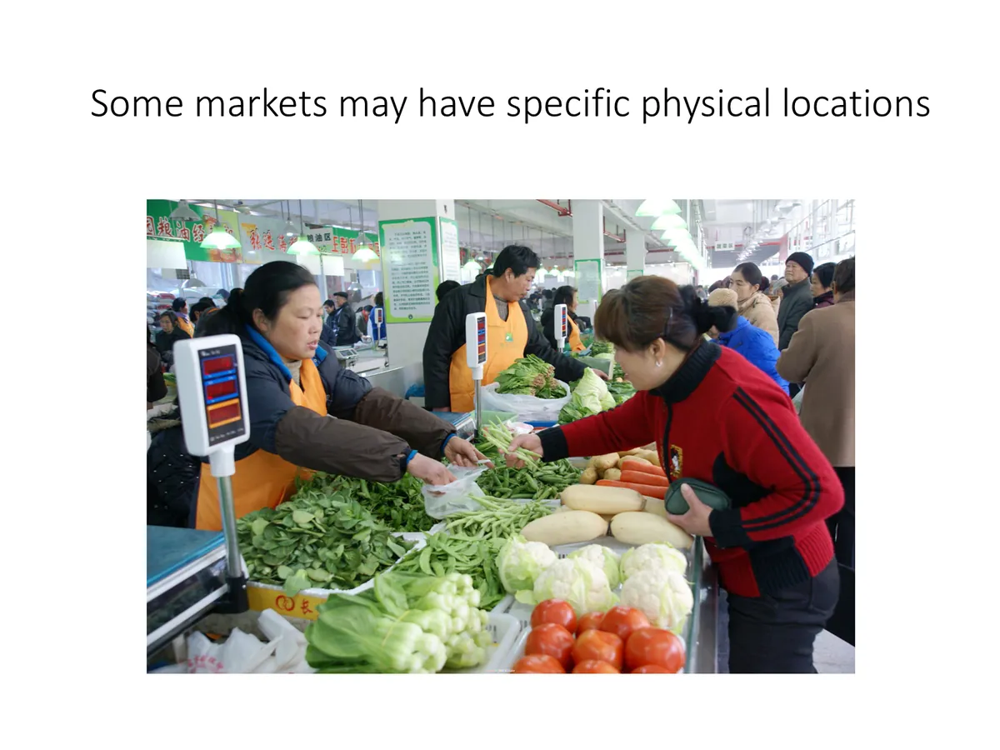
过渡页：有些市场有具体的物理位置。
比如农贸市场、海鲜批发市场、义乌小商品市场——买卖双方在同一个空间里碰面，价格靠喊、靠看货、靠当场议价。
这类市场最符合普通人对「市场」的想象，但它只是市场的一种形态。接下来两页要说明：形态不重要，重要的是交易和价格形成机制。
顺带想一层：物理位置之所以重要，是因为它降低了搜寻成本和运输成本。买卖双方能在同一个地方看货、比价、当场成交，价格就更容易趋于一致。这解释了为什么「集市」是最古老的市场形式。
幻灯片原文 / 板书
Some markets may have specific physical locations
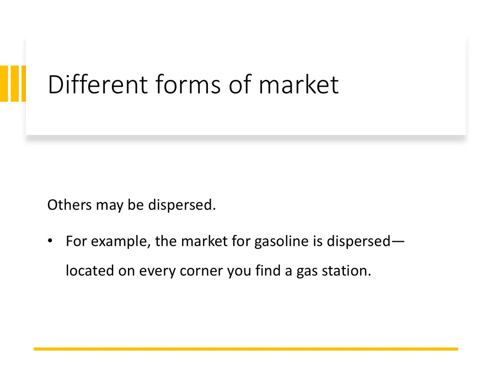
另一类市场是分散的（dispersed）。
汽油市场就是典型：它没有一个大堂，而是「你所在城市的每个街角都有一个加油站」。买家不需要去某个地方，卖家把网点铺到买家身边。
形态变了，竞争的性质也变了：分散的加油站之间仍然在竞争，但因为买家有出行成本，地理位置的差异会影响竞争程度——这一点后面讲垄断竞争时会再回来。
幻灯片原文 / 板书
Different forms of market --- Others may be dispersed. For example, the market for gasoline is dispersed—located on every corner you find a gas station.
这一页是一张杭州地图，上面标了 10 个加油站的位置（红色编号点位），分布在西湖、拱墅、下城、江干、萧山、余杭各处，沿主要道路（G25、G60、S2、S14 等）散布。
它要说明的就是上一页那句话：汽油市场是分散的，你不需要「去市场」，市场就在你上班的路上。
顺便注意：点位密度在城区高、郊区低。这也是市场结构的一部分——城区加油站彼此距离近、竞争激烈；郊区孤立的站点议价能力更强。
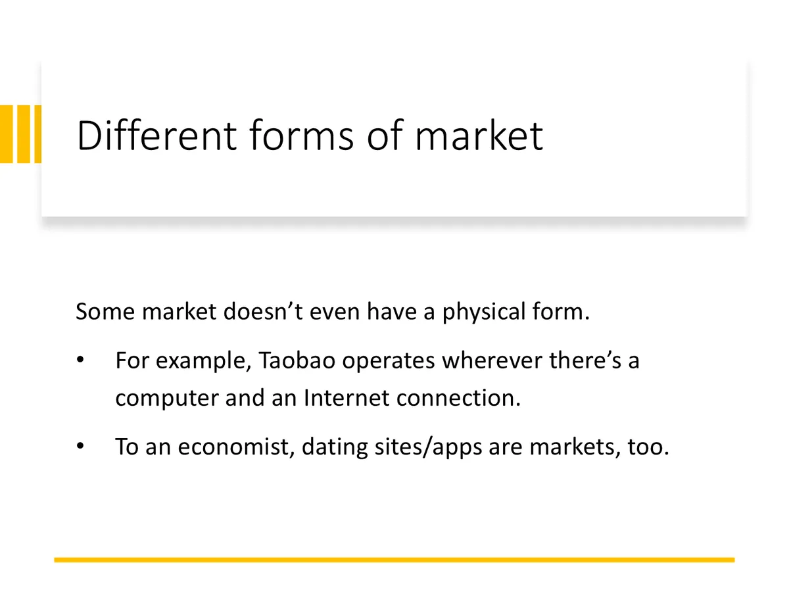
还有一类市场连物理形态都没有。
- 淘宝：只要有电脑和网络，它就在那儿。没有柜台、没有仓库门面，交易在服务器上完成。
- 相亲网站/App：在经济学家的眼里，这也是市场——一边是「供给方」（想找对象的人），一边是「需求方」，中间是撮合规则和价格（会员费）。
判断标准不是「有没有场地」，而是「有没有一群人在交换某种东西，并按某种规则定价」。按这个标准，市场无处不在。
幻灯片原文 / 板书
Different forms of market --- Some market doesn’t even have a physical form. For example, Taobao operates wherever there’s a computer and an Internet connection. To an economist, dating sites/apps are markets, too.
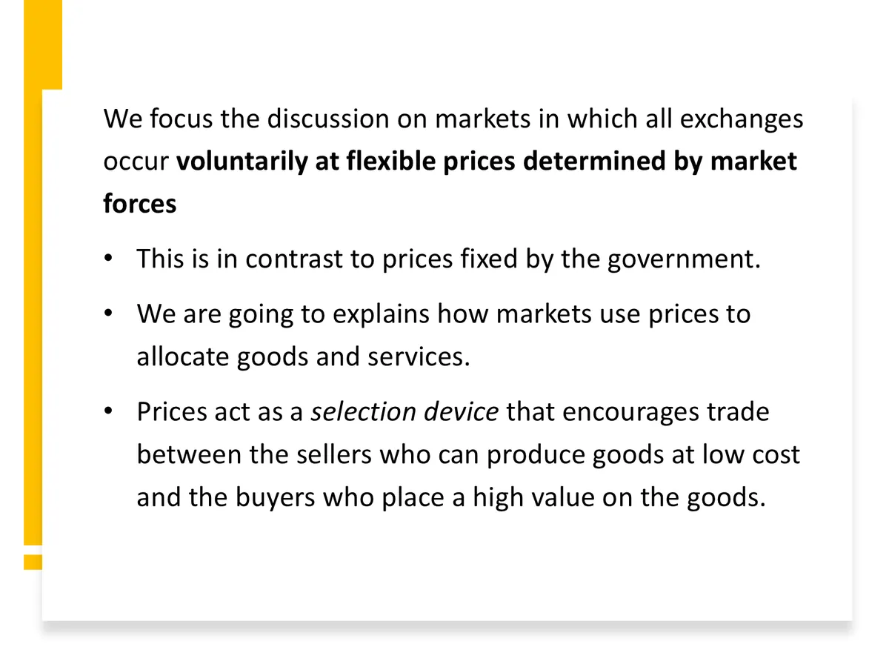
本讲聚焦的市场类型，有两个限定：
- 所有交换都是自愿的（voluntary）；
- 价格是灵活的（flexible），由市场力量决定——与政府定价相对。
在这样的市场里，价格起到一个筛选装置（selection device）的作用：它让能低成本生产的卖者和对商品评价高的买者做成交易。
这句话是整讲的价值观：价格不只是数字，它是一个信息与激励系统。低成本的卖者能接受低价所以活下来，高估值的买者愿意出高价所以拿到货。价格把商品「分配」给了最看重它的人。
幻灯片原文 / 板书
We focus the discussion on markets in which all exchanges occur voluntarily at flexible prices determined by market forces This is in contrast to prices fixed by the government. We are going to explains how markets use prices to allocate goods and services. Prices act as a selection device that encourages trade between the sellers who can produce goods at low cost and the buyers who place a high value on the goods.
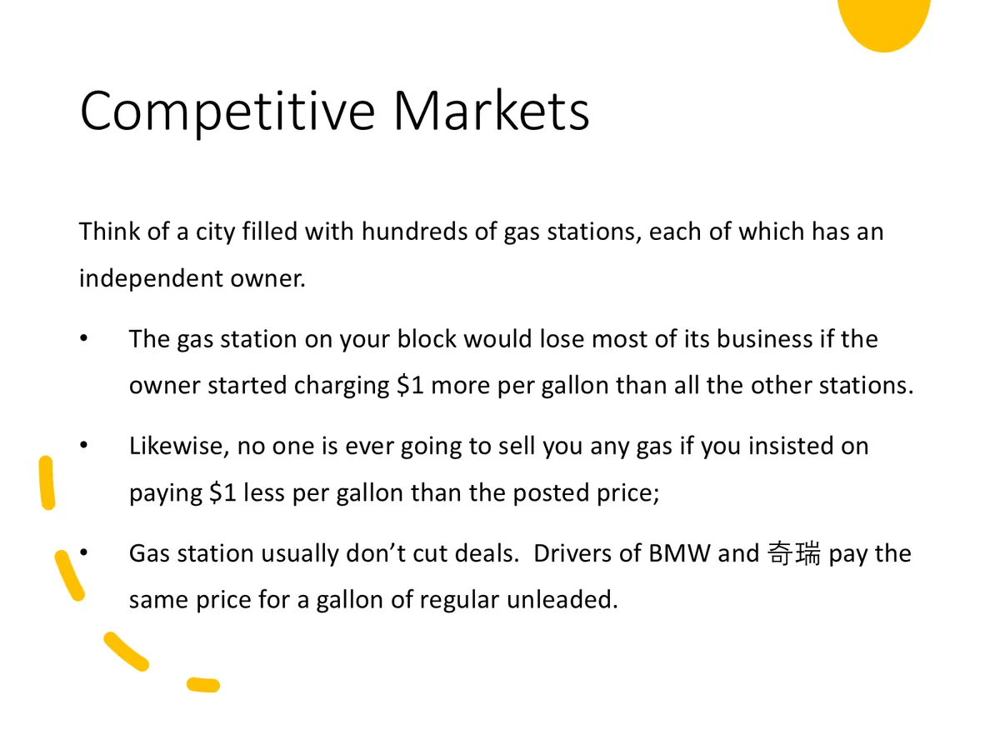
什么叫竞争市场？想象一座城市里有几百家加油站，每家老板各自独立。
- 你家路口那家如果比别家每加仑贵 1 美元，大部分生意会跑掉。
- 反过来，如果你想每加仑少付 1 美元，没人会卖给你——加油站通常不讲价。
- 开宝马的人和开奇瑞的人，加一加仑普通无铅汽油付同一个价格。
三条现象指向同一件事：单个买者或卖者都没有定价权，价格是「给定的」。这就是竞争市场的核心特征，下一页给它正式定义。
幻灯片原文 / 板书
Competitive Markets --- Think of a city filled with hundreds of gas stations, each of which has an independent owner. The gas station on your block would lose most of its business if the owner started charging $1 more per gallon than all the other stations. Likewise, no one is ever going to sell you any gas if you insisted on paying $1 less per gallon than the posted price; Gas station usually don’t cut deals. Drivers of BMW and 奇瑞 pay the same price for a gallon of regular unleaded.
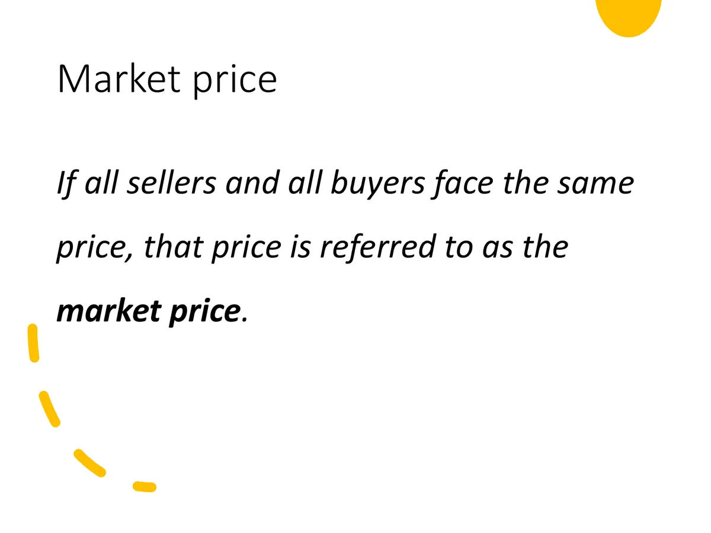
市场价格（market price）：如果所有卖者和所有买者面对的是同一个价格，这个价格就叫市场价格。
注意定义的方式：不是「政府规定的价」，也不是「某家店标的价」，而是「大家共同面对的那个价」。
这个概念之所以重要，是因为它让分析变简单：既然所有人面对同一个 P，我们就可以把 P 当作参数，问「在这个 P 下，买方想买多少、卖方想卖多少」。整个供给需求模型就建立在这个简化上。
幻灯片原文 / 板书
Market price --- If all sellers and all buyers face the same price, that price is referred to as the market price.
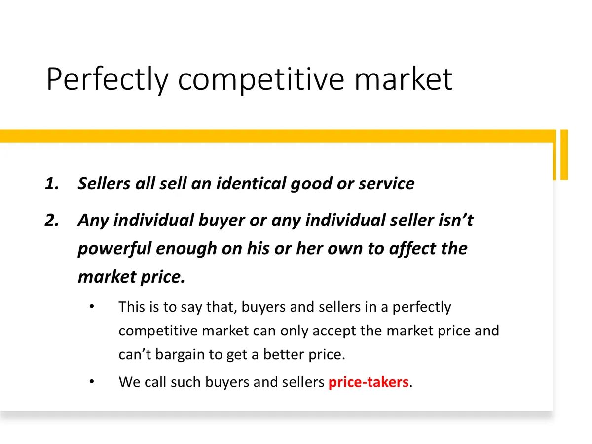
完全竞争市场（perfectly competitive market）的两个条件：
- 所有卖者出售完全相同的商品或服务（同质品）；
- 任何单个买者或卖者都没有能力影响市场价格。
第二点的含义是：双方都只能接受价格，不能讨价还价争取更好的价格。这样的买方和卖方，我们叫 price-takers（价格接受者）。
两个条件要一起看：商品同质是前提，因为一旦有差异（品牌、位置、服务），卖者就有了一定定价权，模型就得换。
幻灯片原文 / 板书
Perfectly competitive market --- Sellers all sell an identical good or service Any individual buyer or any individual seller isn’t powerful enough on his or her own to affect the market price. This is to say that, buyers and sellers in a perfectly competitive market can only accept the market price and can’t bargain to get a better price. We call such buyers and sellers price-takers.
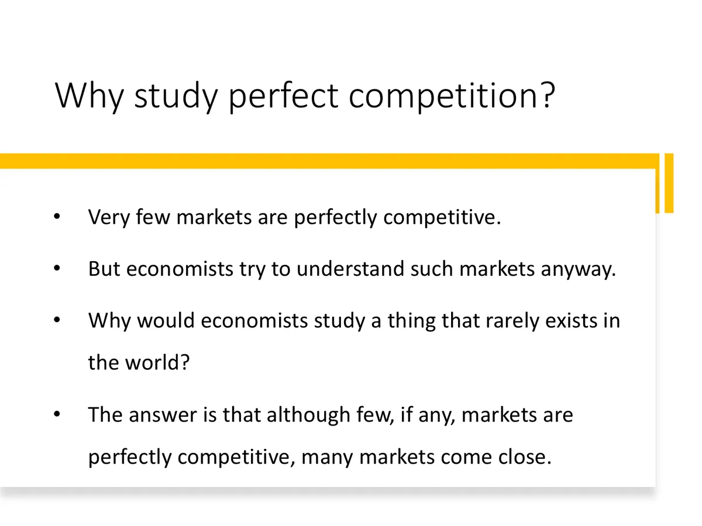
一个诚实的问题：现实中几乎没有完全竞争市场，为什么还要学它？
课件的回答是：虽然很少有市场完全满足条件，但很多市场接近它。
备注里给了更具体的判断标准：大量加油站街对面就有竞争对手，这使它们无法把价格抬高于市场价；乡间公路上孤立的加油站是例外而不是常态。反过来，像微软在软件市场那样能单方面控制价格的大参与者，要留到后面的章节（垄断、寡头）再讲。
方法论上的教训：模型的价值不在假设是否写实，而在它能否在近似成立的范围内给出好预测。
幻灯片原文 / 板书
Why study perfect competition? --- Very few markets are perfectly competitive. But economists try to understand such markets anyway. Why would economists study a thing that rarely exists in the world? The answer is that although few, if any, markets are perfectly competitive, many markets come close.
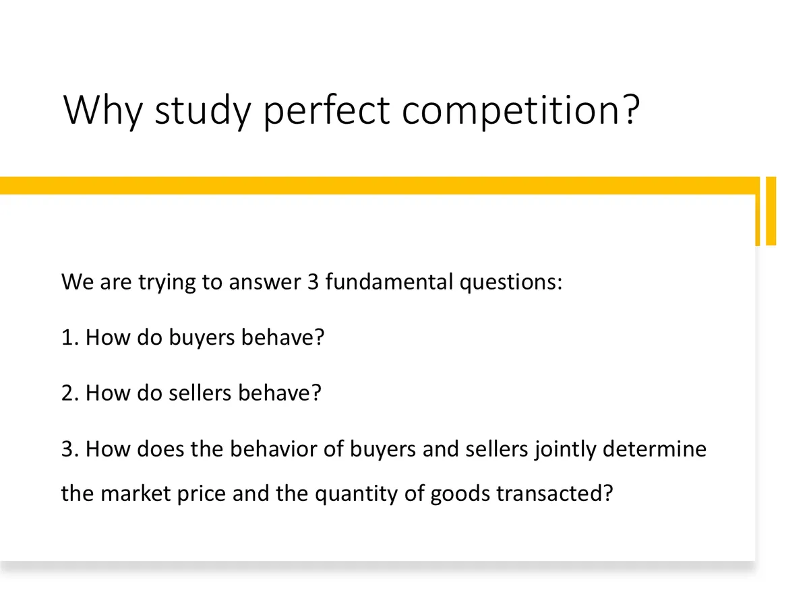
研究竞争市场，要回答三个基本问题：
- 买方如何行为？（需求侧）
- 卖方如何行为？（供给侧）
- 两种行为如何共同决定市场价格和成交数量？
这三个问题是本讲后半段的路标：P35–P53 答第一问，P54–P63 答第二问，P64 以后答第三问。
注意第三问的措辞——不是「买方决定价格」也不是「卖方决定价格」，而是「共同决定」。这是局部均衡分析的标准提法。
幻灯片原文 / 板书
Why study perfect competition? --- We are trying to answer 3 fundamental questions: 1. How do buyers behave? 2. How do sellers behave? 3. How does the behavior of buyers and sellers jointly determine the market price and the quantity of goods transacted?
过渡页：买方如何行为？（How Do Buyers Behave?）
接下来几页给买方行为一个最小的假设集：他们是价格接受者；在给定价格下有一个愿意购买的数量；这个数量与价格的关系画出来就是需求曲线；曲线的高度有明确的经济含义（支付意愿）。
四个步骤，一步一个概念，不要跳。
为什么先讲买方？因为你对买方有直接经验——你自己就是买者，你知道价格涨了自己会少买一点。卖方行为离日常经验远一些，所以放到后面。学这一节时，可以不断问自己：这条曲线跟我自己的购物经验对得上吗？
幻灯片原文 / 板书
How Do Buyers Behave?
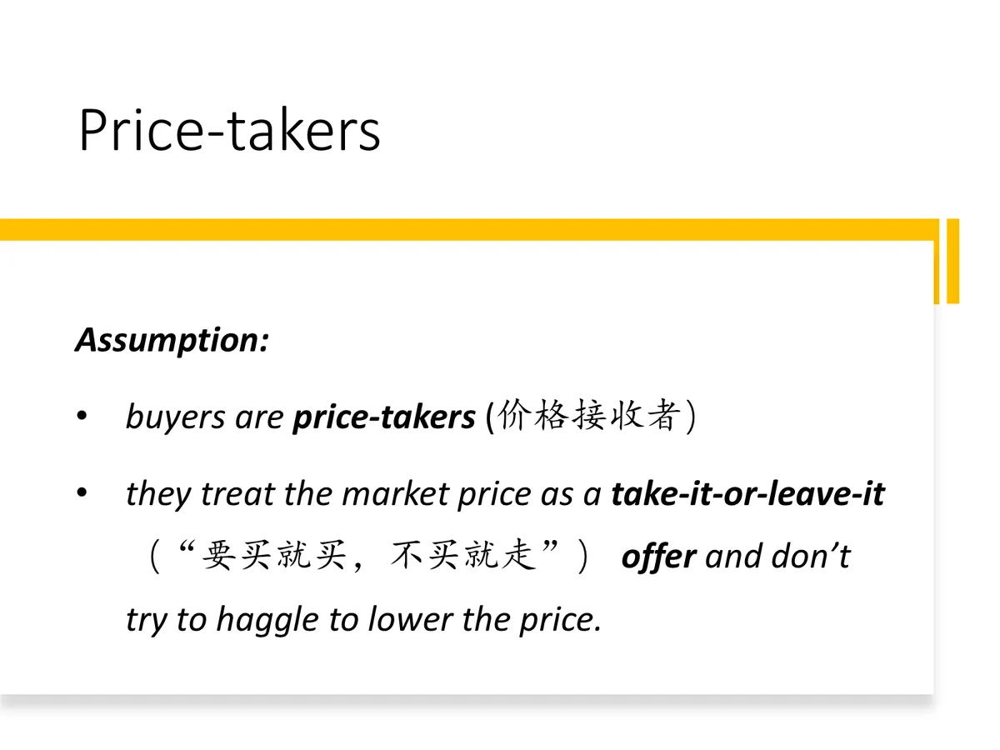
买方的核心假设：买方是价格接受者（price-takers，价格接受者）。
具体含义：他们把市场价格当作一个 take-it-or-leave-it（「要买就买，不买就走」）的报价，不会试图讨价还价把价格压下来。
为什么可以这样假设？因为在竞争市场里，单个买者的购买量相对于整个市场微不足道，而且别处也是同样的价格——你没有谈判的筹码。
这个假设让买方的问题变得极其简单：价格是给定的，只需要决定「买多少」。
幻灯片原文 / 板书
Price-takers --- Assumption: buyers are price-takers (价格接收者） they treat the market price as a take-it-or-leave-it （“要买就买，不买就走”） offer and don’t try to haggle to lower the price.
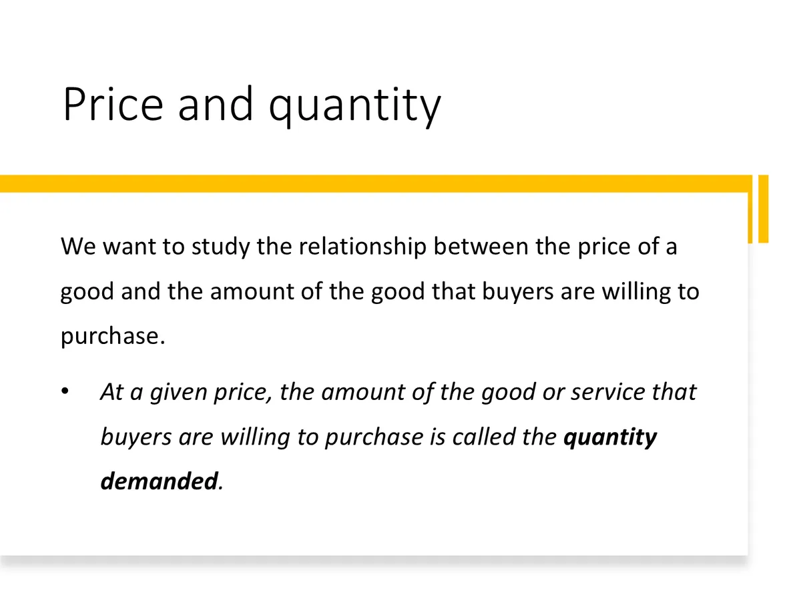
要研究的关系是：商品的价格与买方愿意购买的数量之间是什么关系。
需求量（quantity demanded）的定义：在给定价格下，买方愿意购买的商品或服务数量。
两个词要圈出来：「给定价格」——需求量总是相对于某个价格说的，脱离价格谈需求量没有意义；「愿意购买」——是意愿，不是实际成交量（买不到是另一回事，那是后面短缺的情形）。
幻灯片原文 / 板书
Price and quantity --- We want to study the relationship between the price of a good and the amount of the good that buyers are willing to purchase. At a given price, the amount of the good or service that buyers are willing to purchase is called the quantity demanded.
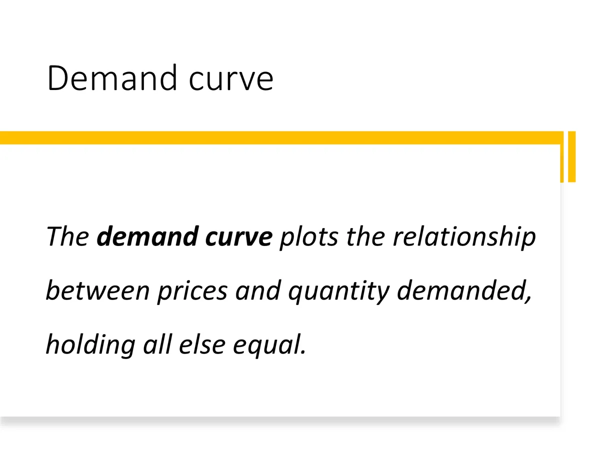
需求曲线（demand curve）：在其他条件不变（holding all else equal）的前提下，把价格与需求量之间的关系画出来的曲线。
习惯上：纵轴是价格，横轴是需求量。所以曲线上的每一个点，都是「某个价格 + 该价格下愿意购买的数量」这样一对数字。
「其他条件不变」这个短语（拉丁文 ceteris paribus）是本讲后面反复出现的伏笔：一旦其他条件变了，整条曲线就会移动。这正是 P50 之后要处理的问题。
幻灯片原文 / 板书
Demand curve --- The demand curve plots the relationship between prices and quantity demanded, holding all else equal.

这一页把需求表（demand schedule）和需求曲线画在一起，用的是汽油的例子（个人，单位：加仑/年）：
| 价格（美元/加仑） | 需求量（加仑/年） |
|---|---|
| 6 | 50 |
| 5 | 100 |
| 4 | 150 |
| 3 | 200 |
| 2 | 250 |
| 1 | 300 |
图上六个点连成一条向下倾斜的直线：价格每降 1 美元，需求量增加 50 加仑。
读图的方法：给定一个价格，竖直向下找到曲线上的点，再水平读到横轴，就是需求量。表格和曲线是同一份信息的两种写法。
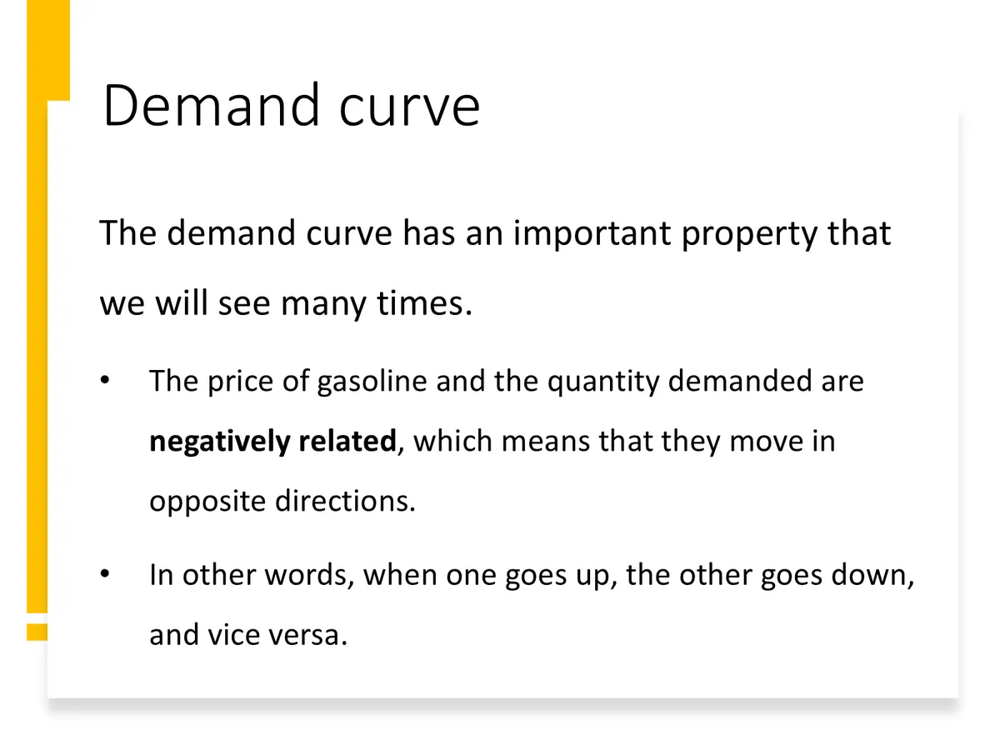
需求曲线有一个「我们会反复见到」的性质：价格与需求量负相关（negatively related）。
负相关的意思是：它们朝相反方向变动——一个上升，另一个下降；一个下降，另一个上升。
在图上就是曲线向下倾斜（downward sloping）。上一页那条直线，斜率是负的：价格从 6 降到 1，需求量从 50 升到 300。
这个性质不是巧合，也不是假设，它有微观基础（下一页开始讲）。先记住图形上的表现，再理解背后的原因。
幻灯片原文 / 板书
Demand curve --- The demand curve has an important property that we will see many times. The price of gasoline and the quantity demanded are negatively related, which means that they move in opposite directions. In other words, when one goes up, the other goes down, and vice versa.
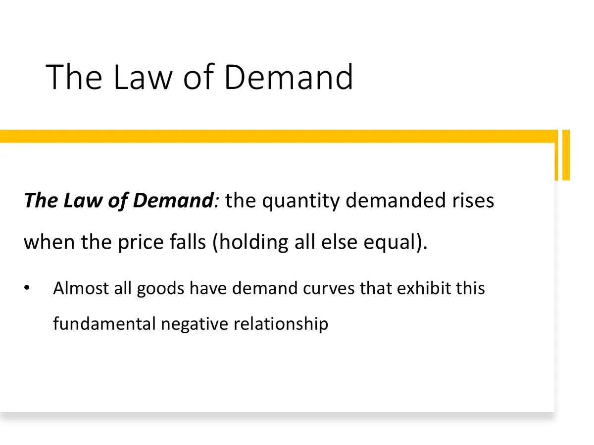
需求定律（Law of Demand）：在其他条件不变的前提下，价格下降时需求量上升。
课件加了一句经验判断：几乎所有商品的需求曲线都表现出这种负向关系。
为什么值得当成「定律」？因为它极其稳健——从汽油、大米到电影票、手术，几乎找不到系统性违反它的例子（理论上的例外是后面会提到的「吉芬商品」，现实中极罕见）。
再次注意「其他条件不变」：需求定律说的是沿同一条曲线的移动，不是曲线的移动。
幻灯片原文 / 板书
The Law of Demand --- The Law of Demand: the quantity demanded rises when the price falls (holding all else equal). Almost all goods have demand curves that exhibit this fundamental negative relationship
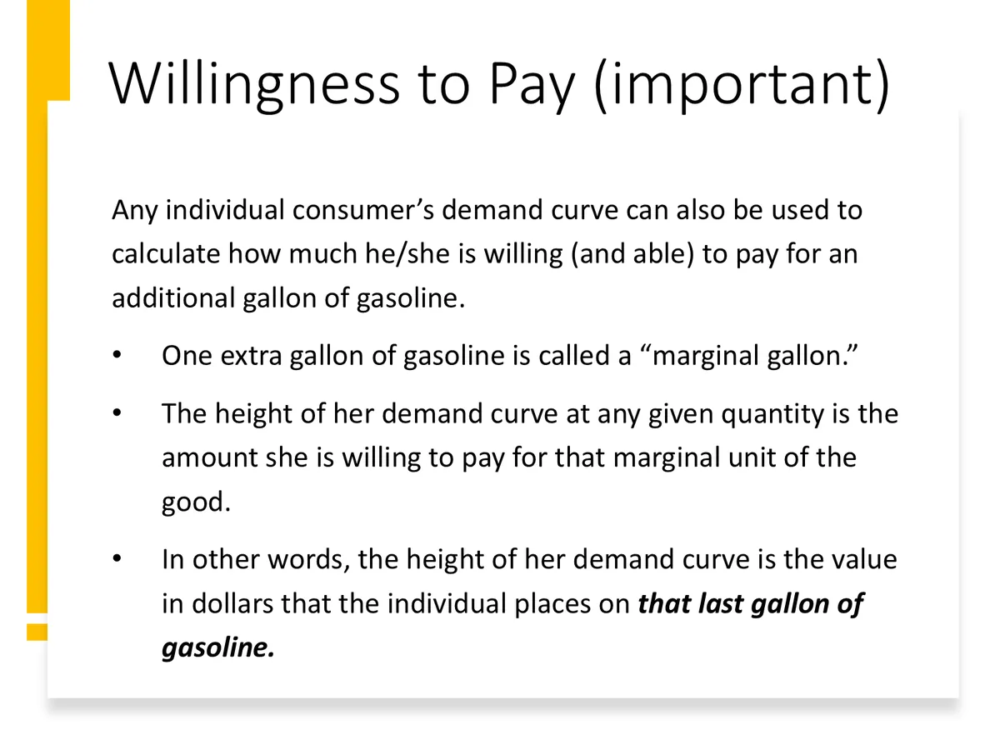
支付意愿（willingness to pay, WTP）——这页标了 important，是本讲最重要的概念之一。
- 一个个人的需求曲线，可以用来算出她为再多一加仑汽油愿意（且有能力）付多少钱。
- 多出来的这一加仑叫边际一加仑（marginal gallon）。
- 在任意给定数量上，需求曲线的高度就是她为那一单位愿意支付的钱。
- 说白了，曲线的高度就是她给最后一加仑标的价格（以美元计）。
关键在「高度」两个字：需求曲线不只是「价格—数量」的对应关系，它的纵坐标本身就是边际单位的价值。后面算消费者剩余、判断「该不该生产」，用的都是这个高度。
幻灯片原文 / 板书
Willingness to Pay (important) --- Any individual consumer’s demand curve can also be used to calculate how much he/she is willing (and able) to pay for an additional gallon of gasoline. One extra gallon of gasoline is called a “marginal gallon.” The height of her demand curve at any given quantity is the amount she is willing to pay for that marginal unit of the good. In other words, the height of her demand curve is the value in dollars that the individual places on that last gallon of gasoline.
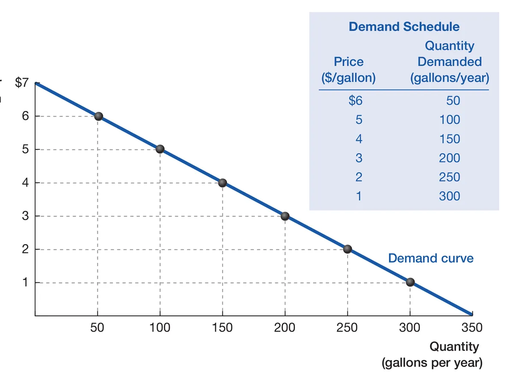
再回到那条需求曲线，这次不看它经过哪些点，而看某一点的高度。
在数量 100 加仑处，曲线的高度是 5 美元。这句话的经济含义是：第 100 加仑汽油，对这个消费者值 5 美元——如果价格正好是 5 美元，她买第 100 加仑时「不赚不亏」；如果价格低于 5 美元，她买这一加仑就赚到了（愿意付的比实际付的多）。
把每个数量上的高度都读一遍，就得到一条边际收益（marginal benefit）曲线：第 50 加仑值 6 美元，第 150 加仑值 4 美元……高度随数量递减。
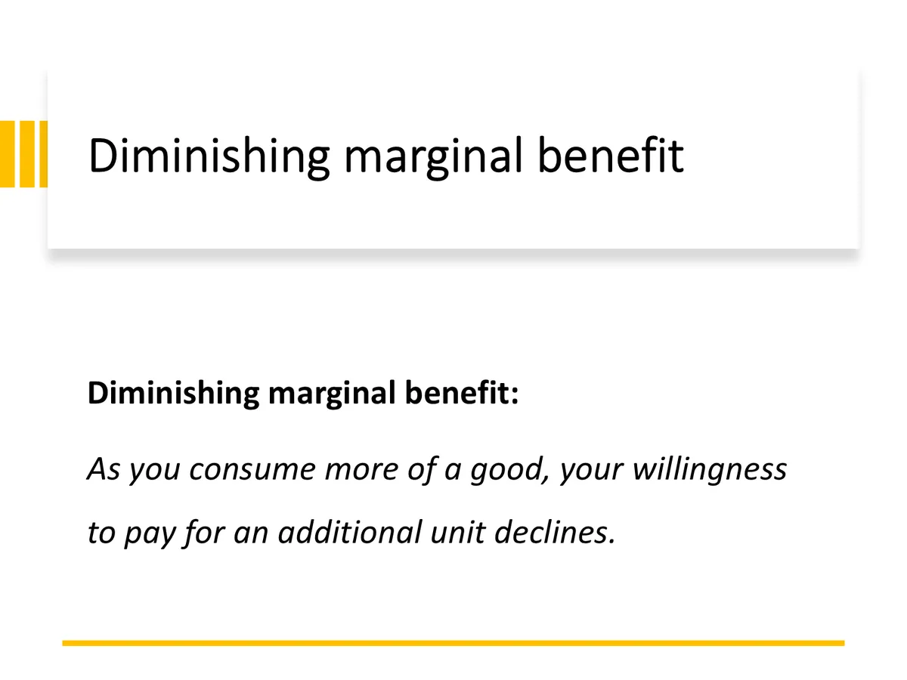
边际收益递减（diminishing marginal benefit）：随着你消费得更多，你对额外一单位的支付意愿会下降。
例子：第一杯水解渴，值 10 块；第二杯还行，值 5 块；第五杯已经喝不下，值 0。
这条规律解释了需求曲线为什么向下倾斜：不是「价格低所以买得多」这么一句同义反复，而是买得越多，每多买一单位带来的好处越少，所以只有价格下降，你才愿意继续买。
需求曲线的向下倾斜 = 边际收益递减在图形上的样子。这句话把 P40 和 P44 接了起来。
幻灯片原文 / 板书
Diminishing marginal benefit --- Diminishing marginal benefit: As you consume more of a good, your willingness to pay for an additional unit declines.
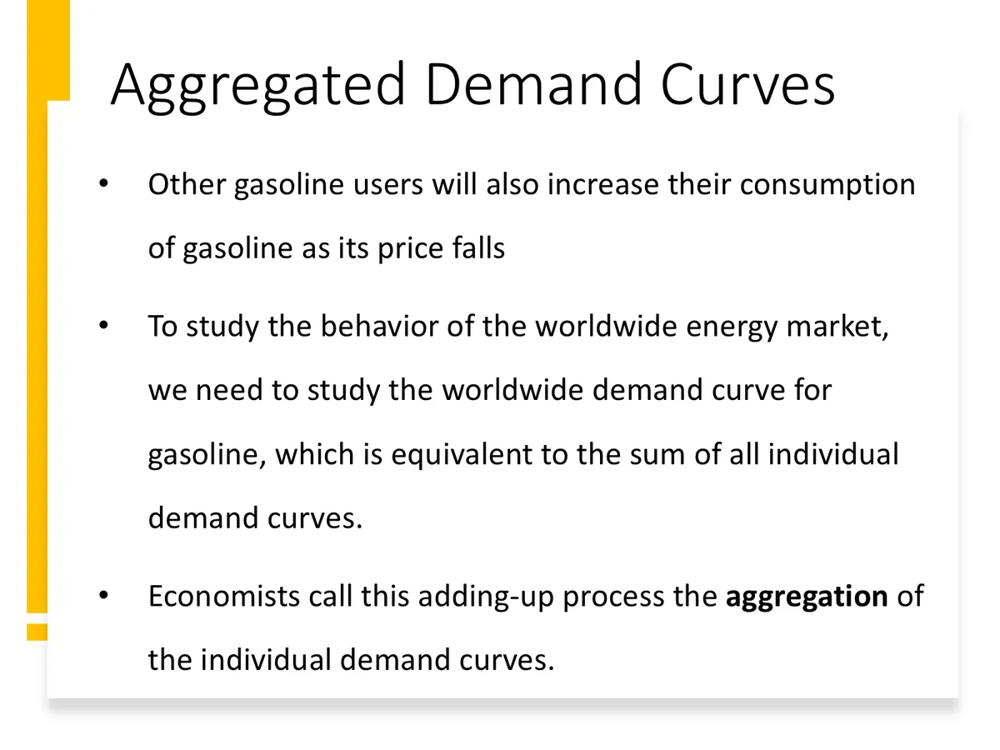
单个消费者的曲线，怎么变成全世界的曲线？
- 油价下跌时，其他用油的人也会增加消费。
- 要研究全世界的能源市场，需要的是世界需求曲线，它等于所有个人需求曲线的和。
- 经济学家把这个相加的过程叫加总（aggregation）。
加总的方式是横向相加：在同一个价格上，把所有人的需求量加起来。为什么是横着加而不是竖着加？因为「在某个价格下，全市场想买多少」才是市场需求的含义——价格是共同的，数量才相加。
幻灯片原文 / 板书
Aggregated Demand Curves --- Other gasoline users will also increase their consumption of gasoline as its price falls To study the behavior of the worldwide energy market, we need to study the worldwide demand curve for gasoline, which is equivalent to the sum of all individual demand curves. Economists call this adding-up process the aggregation of the individual demand curves.
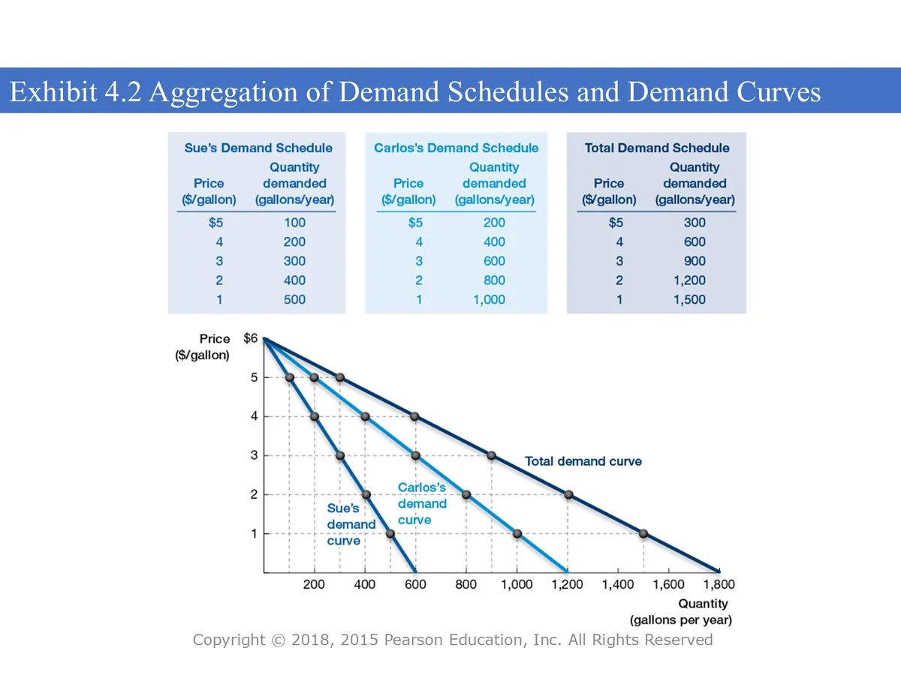
Exhibit 4.2 把加总过程完整地展示出来。
| 价格 | Sue 的需求量 | Carlos 的需求量 | 总需求量 |
|---|---|---|---|
| 5 | 100 | 200 | 300 |
| 4 | 200 | 400 | 600 |
| 3 | 300 | 600 | 900 |
| 2 | 400 | 800 | 1,200 |
| 1 | 500 | 1,000 | 1,500 |
三张表：左边 Sue、中间 Carlos、右边 Total。下面三张图：Sue 的需求曲线、Carlos 的需求曲线，以及最右边那条总需求曲线。
读图要点：总需求曲线更平（同样幅度的价格变化引起更大的数量变化），因为它是两条曲线横向叠加。任一价格上，Total 的横坐标 = Sue 的横坐标 + Carlos 的横坐标。
幻灯片原文 / 板书
Exhibit 4.2 Aggregation of Demand Schedules and Demand Curves --- Copyright © 2018, 2015 Pearson Education, Inc. All Rights Reserved
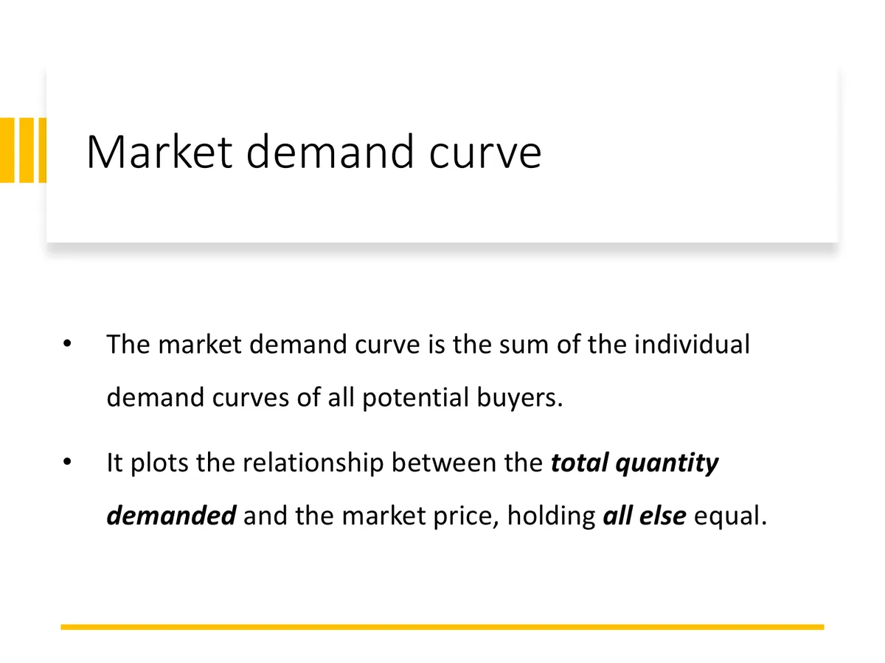
给市场需求曲线（market demand curve）下一个正式定义：它是所有潜在买者个人需求曲线的和。
它描述的是总需求量与市场价格之间的关系，同样在「其他条件不变」的前提下。
两个词要注意：「所有潜在买者」——包括现在没买、但价格合适就会买的人；「总需求量」——是市场上所有人需求量的加总，不是某个人的。
这个定义后面会被反复使用：讲弹性、讲消费者剩余、讲政策评估，起点都是这条曲线。
幻灯片原文 / 板书
Market demand curve --- The market demand curve is the sum of the individual demand curves of all potential buyers. It plots the relationship between the total quantity demanded and the market price, holding all else equal.
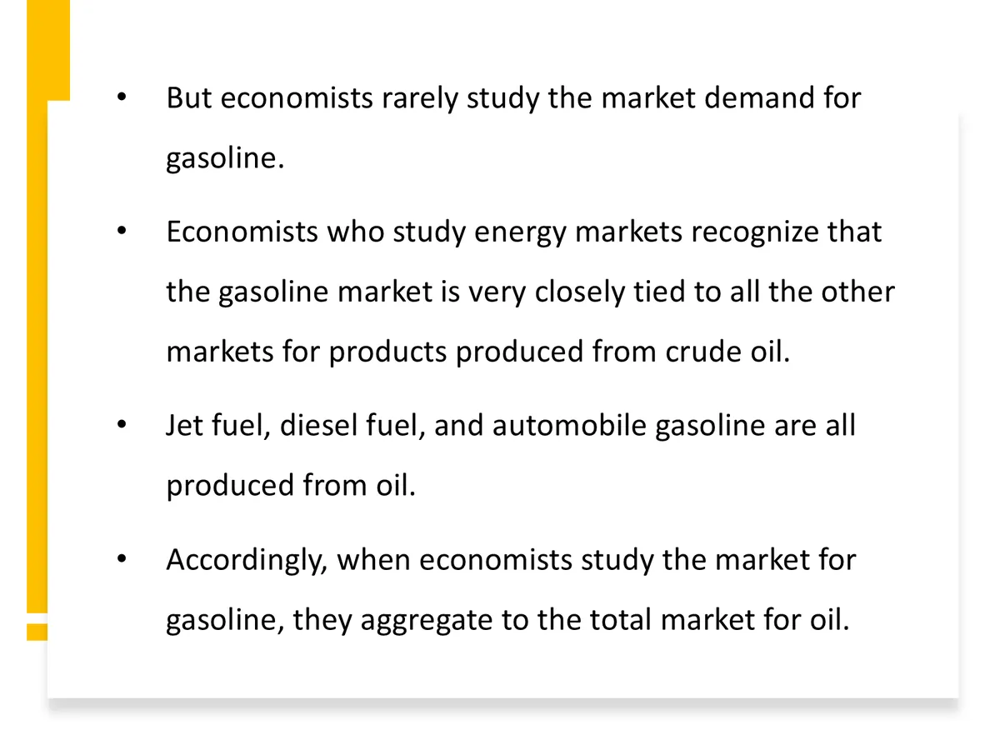
但经济学家很少单独研究汽油的市场需求。为什么？
因为汽油市场与原油的其他产品市场紧密相连：航空煤油（jet fuel）、柴油（diesel）、车用汽油都是原油炼出来的。炼厂可以在不同产品之间调整产出比例，所以它们的价格是联动的。
因此，研究汽油市场时，经济学家会一直加总到整个石油市场（the total market for oil）。
这是一个方法论提醒：市场的边界怎么划，取决于研究的问题。要分析油价冲击，就得用「石油」这个更宽的市场。
幻灯片原文 / 板书
But economists rarely study the market demand for gasoline. Economists who study energy markets recognize that the gasoline market is very closely tied to all the other markets for products produced from crude oil. Jet fuel, diesel fuel, and automobile gasoline are all produced from oil. Accordingly, when economists study the market for gasoline, they aggregate to the total market for oil.
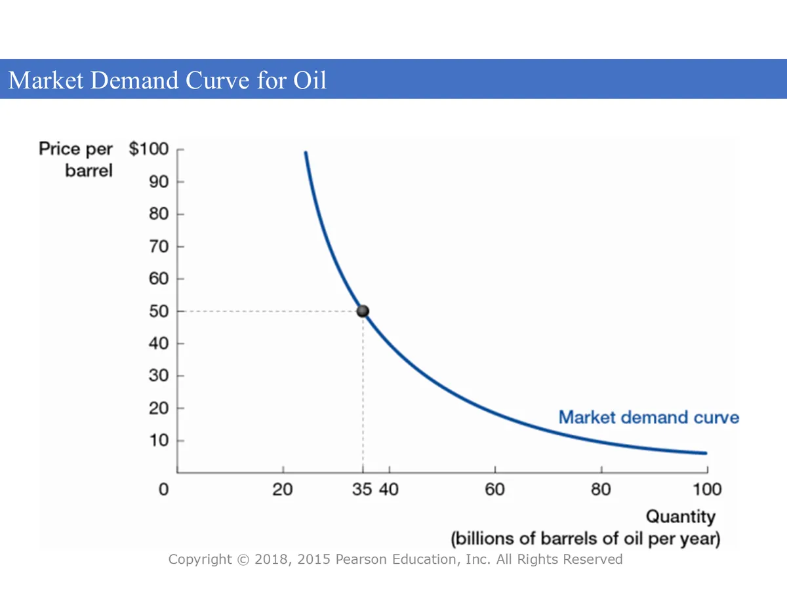
这一页就是石油市场的需求曲线。
纵轴：每桶价格（美元/桶），0 到 100；横轴：数量（十亿桶/年），0 到 100。
曲线向下倾斜且凸向原点：高价时需求量很小（$90 以上只有 20 多亿桶），低价时需求量大（$10 左右接近 100 亿桶）。图上标了一个点：$50 对应 35 十亿桶/年。
记住这个点（$50，35）。P62 的供给曲线也经过它，P67 的均衡点就是它——整讲的数字线索都系在这一对坐标上。
幻灯片原文 / 板书
Market Demand Curve for Oil --- Copyright © 2018, 2015 Pearson Education, Inc. All Rights Reserved
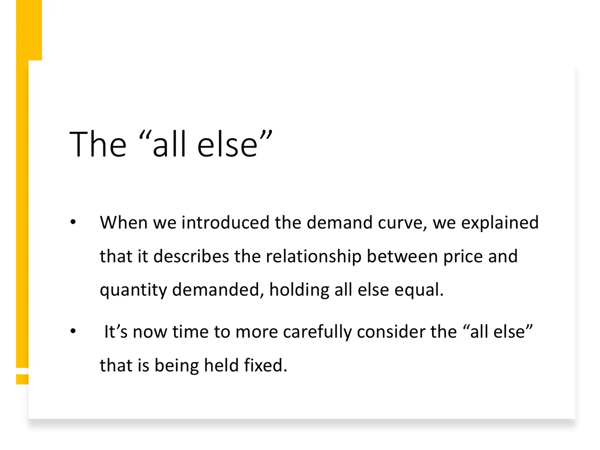
前面每次说需求曲线，都带着一句「其他条件不变」。现在该认真处理这个 "all else" 到底是什么了。
被固定住的东西包括：消费者的收入、偏好、替代品和互补品的价格、人口数量、对未来的预期……只要其中任何一个变了，「给定价格下的需求量」就变了，整条曲线就要移动。
这是本讲最容易混的地方，也是考试必考的地方：沿着曲线移动和整条曲线移动是两件完全不同的事。下一页给出移动的清单。
幻灯片原文 / 板书
The “all else” --- When we introduced the demand curve, we explained that it describes the relationship between price and quantity demanded, holding all else equal. It’s now time to more carefully consider the “all else” that is being held fixed.
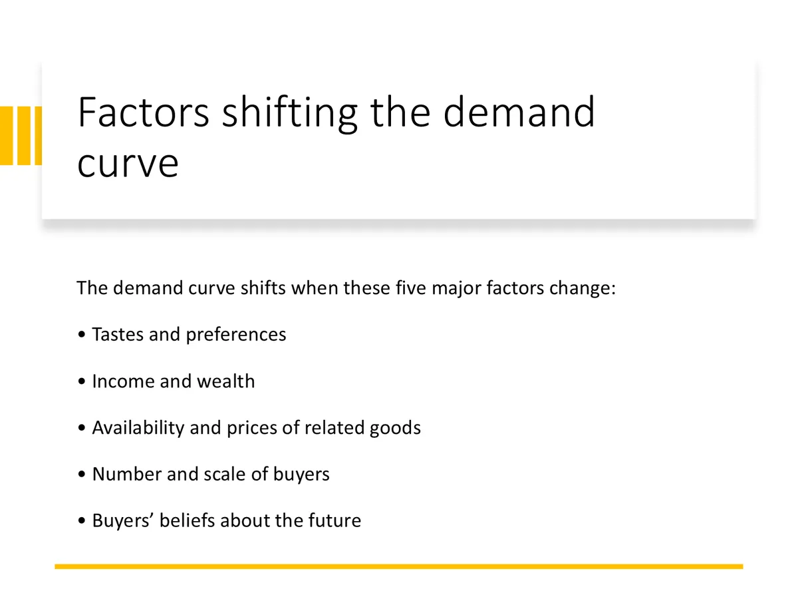
使需求曲线移动的五个主要因素（shift factors）：
- 偏好（tastes and preferences）
- 收入与财富（income and wealth）
- 相关商品的可得性与价格（availability and prices of related goods）
- 买者的数量与规模（number and scale of buyers）
- 买者对未来的预期（buyers' beliefs about the future）
记忆口诀：偏好、收入、相关品、人数、预期。
每一个都要能举出方向性例子：收入上升，正常商品的需求右移；替代品（茶 vs 咖啡）价格上升，本品需求右移；互补品（汽油 vs 汽车）价格上升，本品需求左移。
幻灯片原文 / 板书
Factors shifting the demand curve --- The demand curve shifts when these five major factors change: • Tastes and preferences • Income and wealth • Availability and prices of related goods • Number and scale of buyers • Buyers’ beliefs about the future
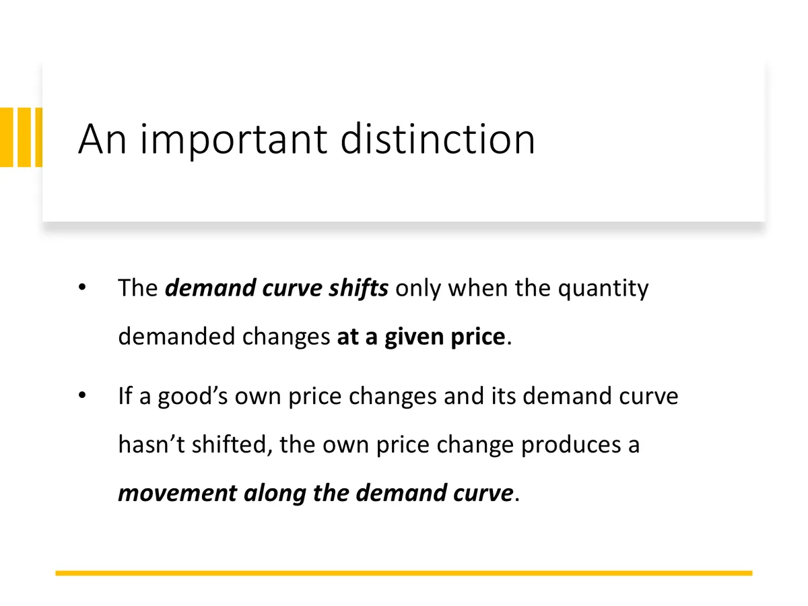
一个重要的区分（an important distinction）：
只有当在给定价格下需求量发生变化时，需求曲线才移动。
反过来：如果商品的自身价格变了，而需求曲线没有移动，那么价格变化产生的是沿需求曲线移动（movement along the demand curve）。
一句话记法：自身价格 → 沿曲线走；其他因素 → 整条线搬家。
判卷时最常见的错误就在这里：把「油价上涨导致加油量减少」画成需求曲线左移。错，那是沿曲线向上移动。
幻灯片原文 / 板书
An important distinction --- The demand curve shifts only when the quantity demanded changes at a given price. If a good’s own price changes and its demand curve hasn’t shifted, the own price change produces a movement along the demand curve.
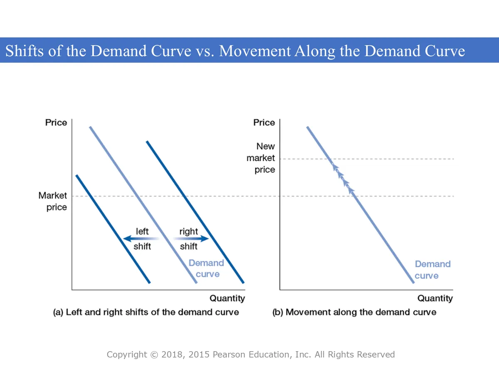
两幅图把这个区分钉死。
- (a) 左移与右移：价格不动（market price 那条水平虚线不变），但整条需求曲线搬到左边或右边。左移 = 同一价格下买得少（需求减少）；右移 = 同一价格下买得多（需求增加）。
- (b) 沿曲线移动：曲线只有一条，价格从 market price 变到 new market price，点沿着同一条曲线滑动，箭头贴着曲线走。
看图时先问一句：价格变了吗？别的因素变了吗？ 两个问题的答案，决定你看的是 (a) 还是 (b)。
幻灯片原文 / 板书
Shifts of the Demand Curve vs. Movement Along the Demand Curve --- Copyright © 2018, 2015 Pearson Education, Inc. All Rights Reserved
过渡页：卖方行为与供给曲线（Seller behavior and the supply curve）。
备注说得很清楚：到这里你已经理解了买方的行为；要看清一个市场的全貌，还必须研究卖方；正是买卖双方的相互作用决定了市场价格。
接下来几页的结构与需求侧完全对称：供给量 → 供给曲线 → 供给定律 → 卖方保留价格 → 市场供给 → 加总 → 移动因素。学的时候可以两两对照着记。
幻灯片原文 / 板书
Seller behavior and the supply curve
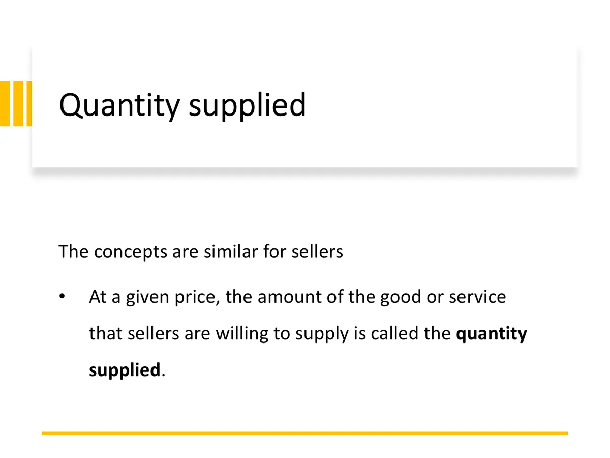
卖方这边的概念与买方完全对称。
供给量（quantity supplied）：在给定价格下，卖方愿意供给的商品或服务数量。
对照记忆：
- 需求量 = 给定价格下买方愿意买多少；
- 供给量 = 给定价格下卖方愿意卖多少。
两个定义都带「给定价格」，都讲「愿意」。所以下面要问的问题也一样：这个「愿意」的数量，随价格怎么变？
再补一句容易忽略的：供给量是计划量，不是实际卖出去的量。卖方想卖 100 万桶，市场只买走 80 万桶，供给量仍然是 100 万桶——多出来的 20 万桶变成库存，正是后面「超额供给」那一页要讲的东西。
幻灯片原文 / 板书
Quantity supplied --- The concepts are similar for sellers At a given price, the amount of the good or service that sellers are willing to supply is called the quantity supplied.
用 ExxonMobil（埃克森美孚）做例子。
现象：油价上涨时，ExxonMobil 更愿意供给那些开采成本较高的石油。
为什么？因为一个油田能不能赚钱，取决于「卖价」和「开采成本」的比较。高价时，原本不划算的难采油田变得划算，公司就会去开采；低价时，这些油田会被闲置。
这句话里藏着供给曲线向上倾斜的全部原因：不同单位的生产成本不同，价格必须涨到足够高，才值得把高成本的那部分产量拿出来。
幻灯片原文 / 板书
Example: ExxonMobil --- Think about a company ExxonMobil When the price of oil goes up, ExxonMobil increases its willingness to supply oil that is relatively expensive for the company to discover and extract.
具体到什么程度？课件给了一个让人印象深刻的例子。
- 有些石油在深海：海水深 2 英里，油层还在海底之下8 英里。
- 打这种井要用专用船，船长两个足球场，配备数百名工人和机器人化的无人潜艇。
- 因为费用极其巨大，这种井只有在油价超过 60 美元/桶时才会开钻。
这就把「边际成本」变成了看得见的东西：60 美元不是随便定的数字，它是那一层油田的成本线。油价在 60 以下，这部分供给就是零；一旦越过 60，它才进入市场。
幻灯片原文 / 板书
Example: ExxonMobil --- Some oil is in deep-water locations where the ocean depth is 2 miles and the oil is another 8 miles below the seafloor. Such wells are drilled by specialized ships two football fields long, which are staffed by hundreds of workers and equipped with robotic, unmanned submarines. Because of the enormous expense, such wells are only drilled when the price of oil is over $60 per barrel.
供给曲线（supply curve）：把不同价格下的供给量画出来的曲线。
供给定律（Law of Supply）：在几乎所有情况下，价格上升时供给量上升（其他条件不变）。
与需求定律正好相反：需求曲线向下倾斜，供给曲线向上倾斜。
原因上一页已经给了：生产成本不同的产能排成一条队，价格从低到高，被「叫醒」的产能越来越多。所以价格越高，愿意供给的数量越大。
幻灯片原文 / 板书
The supply curve and law of supply --- The supply curve plots the quantity supplied at different prices. Law of Supply: In almost all cases, the quantity supplied rises when the price rises (holding all else equal).
卖方保留价格（willingness to accept, WTA）：卖方愿意接受的最低价格，低于这个价他就不卖。
三个等价的说法，都要记住：
- 在某个给定供给量上，供给曲线的高度就是 WTA。
- WTA 就是边际生产成本（marginal cost of production）。
- 所以供给曲线的高度 = 生产最后一单位的成本。
与买方的 WTP 对照：需求曲线高度 = 买方对最后一单位的估值；供给曲线高度 = 卖方生产最后一单位的成本。两个高度一夹，就是「这笔交易是否值得做」的判断标准。
幻灯片原文 / 板书
Willingness to accept --- Willingness to accept is the lowest price that a seller is willing to get paid to sell an extra unit of a good. At a particular quantity supplied, willingness to accept is the height of the supply curve. Willingness to accept is the same as the marginal cost of production.
市场供给曲线（market supply curve）：所有潜在卖者个人供给曲线的和。
它描述总供给量与市场价格的关系，其他条件不变。
和市场需求一样，加总的方式是横向相加：在同一个价格上，把所有卖者的供给量加起来。
于是市场供给曲线比任何单个卖者的曲线都更平——价格稍微变动，参与的卖者多了，数量反应就更大。下一页用表和图把这个过程做一遍。
幻灯片原文 / 板书
Market supply curve --- The market supply curve is the sum of the individual supply curves of all the potential sellers. It plots the relationship between the total quantity supplied and the market price, holding all else equal.
两个卖者的供给表相加：
| 价格（美元/桶） | Chevron | ExxonMobil | 总供给 |
|---|---|---|---|
| 10 | 0.0 | 0.0 | 0.0 |
| 25 | 0.4 | 0.6 | 1.0 |
| 50 | 0.7 | 1.0 | 1.7 |
| 75 | 0.9 | 1.2 | 2.1 |
（单位：十亿桶/年）
读表：$10 时两家都不供（低于成本）；$25 时合计 1.0；$75 时合计 2.1。
注意 $10 那一行的两个 0.0 不是数据缺失，而是真的不供：这个价格低于两家开采的最低边际成本，采一桶亏一桶，理性的选择是产量为零。所以三条供给曲线在低价段都贴着纵轴，价格升过某个门槛之后才开始离开原点、出现正的供给量。
下面三张图：Chevron 的曲线、ExxonMobil 的曲线、以及总供给曲线。总曲线在每一价格上横坐标等于两者之和，因此更平缓；三条线都从接近零的低价水平起步、向上弯曲（边际成本递增）。
把加总推到整个市场，就得到石油市场的供给曲线。
纵轴：美元/桶（0–125）；横轴：十亿桶/年（0–50）。
曲线从很低的价位（约 5 美元）起步，缓慢上升，到 30 以后开始变陡，在 $50 处对应 35 十亿桶/年。
请把这个点和 P49 需求曲线上的点对照：同一个（$50，35）。这不是巧合，下一页就要让两条线相交。供给曲线的向上弯曲，来自 P57 讲的那个道理：越贵的产能，越要等价格足够高才被启用。
使供给曲线移动的因素（shift factors）：
- 生产该商品所用投入品的价格
- 生产该商品的技术
- 卖者的数量与规模
- 卖者对未来的预期
注意与需求侧对照：需求有五个（多了「偏好」和「收入」，少了「技术」），供给有四个。技术进步 → 成本下降 → 供给右移；投入品（工资、电价、原油）涨价 → 成本上升 → 供给左移。
记忆方法：供给侧只关心两件事——「能不能便宜地生产出来」和「有多少人在生产」。
幻灯片原文 / 板书
Factors shifting supply --- The supply curve shifts when these variables change: • Prices of inputs used to produce the good • Technology used to produce the good • Number and scale of sellers • Sellers’ beliefs about the future
过渡页：供给与需求在均衡中（Supply and Demand in Equilibrium）。
到这里，买方和卖方各自的行为都讲完了：给定价格，买方想买多少（需求曲线），卖方想卖多少（供给曲线）。
但两条曲线还是分开的。接下来要把它们放进同一张图，回答那个最实际的问题：价格到底会是多少？
这一部分的路线：先讲交点与价格如何收敛到交点（P65–P71），再用四个例子练习曲线移动（P72–P81），最后看政府干预价格会发生什么（P82–P86）。
幻灯片原文 / 板书
Supply and Demand in Equilibrium
先把问题明确列出来：
- 我们还没有解释如何把市场的两侧放在一起。
- 买方和卖方如何相互作用？
- 什么决定了他们成交的市场价格？
- 什么决定了买方买走、卖方卖出的数量？
四个问题，其实就是两个未知数：P 和 Q。供给需求框架的全部内容，就是用两条曲线解出这两个未知数。
这里要提醒一个思维习惯上的错误：价格和数量是同时被决定的，不能先定价格、再「由此推出」数量，也不能先定数量、再问「该卖多少钱」。它们只是同一条交点坐标的两个分量。
幻灯片原文 / 板书
Putting it together --- We haven’t explained how to put the two sides of the market together. How do buyers and sellers interact? What determines the market price at which they trade? What determines the quantity of goods bought by buyers and sold by sellers?
方法：把市场需求曲线和市场供给曲线放进同一张图。
继续使用完全竞争市场的假设，后面简称为「竞争市场」（competitive market）。
为什么这里要强调这个假设？因为均衡的推导要用到「双方都是价格接受者」：只有接受价格的人，才会在价格高于均衡时竞相降价、低于均衡时竞相加价，把价格推回交点。没有这个假设，「均衡」只是一个几何交点，没有行为基础。
幻灯片原文 / 板书
Putting it together --- We will use the market demand curve and the market supply curve to answer these questions. We’ll continue to study a perfectly competitive market, which we’ll refer to as a “competitive market.”
图上的结果：
- 蓝色需求曲线向下倾斜，红色供给曲线向上倾斜；
- 两线交于一点：价格 $50/桶，数量 35 十亿桶/年；
- 因为一条向下、一条向上，两条线只有一个交点。
术语：
- 交点叫竞争均衡（competitive equilibrium）；
- 交点对应的价格叫均衡价格，也叫市场出清价格（market clearing price）——在这个价格上，每一个被供给出来的单位都能找到买者，市场「出清」；
- 对应的数量叫均衡数量。
为什么叫「均衡」（equilibrium）？因为这个状态没有内在的变动力量：谁都没有动机单方面改变自己的行为。
这里有一个重要假设必须点明：买方和卖方都是价格接受者。正因为他们是价格接受者，价格一旦偏离均衡，才会有人按「少买一点 / 少卖一点」的方式作出反应，从而产生把价格推回去的力量。
如果厂商有定价权（垄断），情况就不同了——那时「均衡」的含义要重新定义，这是后面章节的内容。
幻灯片原文 / 板书
Equilibrium --- Why do we say this is an equilibrium, or this situation is in equilibrium? Note: Actually there is an important assumption here: that buyers and sellers are price takers.
现在检验均衡的稳定性：假设价格暂时停在 $70（高于均衡的 $50）。
读图：
- 在 $70，供给量 = 38 十亿桶；
- 需求量 = 29 十亿桶；
- 差额 = 9 十亿桶卖不出去。
这个差额叫超额供给（excess supply），图上用大括号标出。
后果：每年有 9 十亿桶油卖不掉，全球库存开始堆积。库存压力会推动价格下降。
现实里价格为什么会暂时停在 $70？战争、禁运，或者产油国联合限产（卡特尔定价），都可能把价格顶到均衡之上——本讲后面利比亚那个例子就是一例。
为什么价格一定会降？备注补充了机制。
- 现有的储油罐规模有限，而且建罐很贵——卖家没法一直把卖不掉的油存着。
- 于是卖家开始互相压价（undercutting each other's prices），只为把不断增加的库存清掉。
- 价格下跌，一直跌到回到 $50 的均衡价格为止。
这个调整过程通常不会持续很久，因为库存成本很高，压价的压力很急。
注意这里的因果链：超额供给 → 库存上升 → 卖家竞相降价 → 价格下降 → 供给量减少、需求量增加 → 缺口缩小。
相反的情形：价格暂时停在 $30（低于均衡）。
- 供给量 = 30 十亿桶；
- 需求量 = 44 十亿桶；
- 差额 = 14 十亿桶买不到。
这个差额叫超额需求（excess demand），图上用大括号标出。
后果：想买而买不到的买家会互相竞价（offering to pay higher prices）去抢那有限的数量，价格被推高，一直到 $50 为止。
所以：超额供给 → 降价；超额需求 → 涨价。两条调整方向都指向交点，这就是「均衡」的稳定性。
过渡页：竞争均衡中的曲线移动（Curve Shifting in Competitive Equilibrium）。
前半段我们把框架搭好了：两条曲线、一个交点、一套把价格推回交点的机制。
但框架本身只是工具。接下来要用它分析真实世界的冲击：供给移动、需求移动、两条线同时移动，以及——价格被管制时会发生什么。
顺序是：先看一条曲线动，再看两条一起动，最后看政府不许价格动。每做一次，都要回答同样两个问题——价格往哪走、数量往哪走。
幻灯片原文 / 板书
Curve Shifting in Competitive Equilibrium
老师先泼了一盆冷水：供给—需求—均衡这个框架本身并不怎么有趣。
它只是一张图、两条线、一个交点。任何一个学过的人都能画出来。
真正有意思的是：我们可以用这个框架去分析现实中发生的各种情况——战争、技术突破、偏好变化、政策干预——并给出「价格会怎么变、数量会怎么变」的预测。
接下来四个例子，就是四次「用框架」的练习。
幻灯片原文 / 板书
Putting it to work --- The demand-supply-equilibrium framework by itself is not very interesting. What is more interesting is that we can use this framework to analyze different kinds of situations that happens in the real world.
例 1：世界石油市场受到冲击。
问题：如果一个主要石油出口国突然停止生产，均衡价格和均衡数量会怎么变？
课件给的现实版本：2011 年的利比亚。内战导致利比亚石油产量骤降、出口中断。
分析思路（先想再画）：这是供给侧的冲击——在任何给定价格下，市场上可供给的石油变少了，所以供给曲线左移。需求曲线不动。下一页画图。
幻灯片原文 / 板书
Putting it to work --- We’d like to know how a shock to the world oil market will affect the equilibrium quantity and the equilibrium price of oil. Example: What would happen if a major oil exporter suddenly stopped production, as Libya did in 2011?
图上的三步，课件用箭头标得很清楚：
- 首先，供给曲线左移（old supply curve → new supply curve）；
- 然后，新的均衡要沿着需求曲线移动才能达到（蓝色小箭头沿需求曲线向上）；
- 结果：价格上升（左侧向上箭头），数量下降（下方向左箭头）。
新的均衡点是「新供给曲线」与「原需求曲线」的交点，位于旧均衡点的左上方。
结论：供给冲击 → 价格涨、数量跌。这解释了为什么产油国出事时油价会跳涨。
幻灯片原文 / 板书
A Leftward Shift of the Supply Curve --- Copyright © 2018, 2015 Pearson Education, Inc. All Rights Reserved
例 2：技术突破。
问题：如果技术突破使供给曲线右移，会发生什么？
这是例 1 的镜像：冲击同样来自供给侧，但方向相反——在任何给定价格下，生产者能供给的数量更多了。
先自己想答案再翻页：供给右移，沿需求曲线向下移动，价格下降、数量上升。技术进步的受益者里，消费者拿到的是更低的价格，生产者拿到的是更大的销量。
幻灯片原文 / 板书
Putting it to work --- Example 2: What would happen if a technological breakthrough shifted the supply curve to the right?
这个「假设情形」在 2011–2016 年真的发生了。
- 部分原因是水力压裂（fracking）开采技术的繁荣。
- 压裂技术让美国的石油产量在 2011 到 2016 年间增加了 70%。
- 这场繁荣使全球石油供给曲线右移，在把油价从 2011 年的 100 美元/桶压到 2016 年的 50 美元/桶上起了重要作用。
这个例子的价值在于：它不是「假设」推演，而是模型的预测与真实数据对上了。这是检验理论的方式。
幻灯片原文 / 板书
Technological Breakthroughs --- From 2011 to 2016 the supply-curve shift actually occurred Partly due to a boom in fracking-based oil extraction. Fracking enabled the United States to increase oil production by 70 percent from 2011 to 2016 The fracking boom contributed to a rightward shift in the worldwide supply curve for oil, which played an important role in driving oil prices down from $100 per barrel in 2011 to $50 in 2016.
Exhibit 4.14 把例 2 画成图。
- 供给曲线从「old supply curve」右移到「new supply curve」（橙色箭头向右）。
- 需求曲线不动。
- 新均衡沿需求曲线向下移动（蓝色小箭头）。
- 结果：价格下降（左侧向下箭头），数量增加（下方向右箭头）。
与 P75 对照记忆：供给左移 = 价涨量跌；供给右移 = 价跌量增。价格与数量的方向永远相反，因为需求曲线向下倾斜。
读图顺序建议固定下来：先标出旧交点，再把整条供给曲线往右推，最后让新交点落在原来的需求曲线上。不要一上来就猜价格，先让图说话。
幻灯片原文 / 板书
Exhibit 4.14 A Rightward Shift of the Supply Curve --- Copyright © 2018, 2015 Pearson Education, Inc. All Rights Reserved
例 3：偏好变化（shift in taste）。
问题：如果环保意识上升、加上新的节能技术，使消费者在任何给定价格下都用更少的油，会发生什么？
关键词是「在任何给定价格下」——这正是曲线移动的定义。所以这是需求侧的冲击：需求曲线左移。
注意区分：如果是油价本身上涨导致用油减少，那是沿曲线移动；这里说的是人们的偏好和技术变了，与价格无关。
幻灯片原文 / 板书
Shift in taste --- For example what would happen if rising environmental concerns and new energy-saving technologies led consumers to use less oil at any given price?
图上的推演：
- 需求曲线从「old demand curve」左移到「new demand curve」；
- 供给曲线不动；
- 新均衡沿供给曲线向下移动；
- 结果：价格下降、数量下降——两个都降。
这是需求左移的标准结论：价跌量减。
与 P75（供给左移，价涨量跌）对比：同样是「数量下降」，但价格方向相反。这就是为什么分析冲击时，必须先判断冲击在哪一侧。
另外一个容易混的地方：需求左移之后，成交的供给量也少了。但那是沿供给曲线移动的结果，供给曲线本身没有动。移动（shift）与沿曲线移动（movement along）的区别，在这里第二次派上用场。
幻灯片原文 / 板书
A Leftward Shift of the Demand Curve --- Copyright © 2018, 2015 Pearson Education, Inc. All Rights Reserved
现实中，两条曲线常常同时移动。
课件给的例子：压裂革命让石油供给右移的同时，环保意识和节能技术让石油需求左移。
图上三种情形 (a)(b)(c) 画的都是「需求左移 + 供给右移」：
- 价格：三种情形都下降（两条移动都指向低价，方向一致，结论确定）。
- 数量：不确定。(a) 数量减少（需求左移幅度大）；(b) 数量不变（两股力量正好抵消）；(c) 数量增加（供给右移幅度大）。
这就是「双移动」的一般规律：方向一致的效果可以确定，方向相反的效果不确定。
幻灯片原文 / 板书
The Demand Curve Shifts Left and the Supply Curve Shifts Right --- Copyright © 2018, 2015 Pearson Education, Inc. All Rights Reserved
价格管制（price control）——老师抛出问题：
如果政府试图直接规定价格，会发生什么？
前面所有的分析都建立在一个隐含前提上：价格可以自由调整。一旦这个前提被拿掉，供给和需求曲线还在，但「交点」不再自动实现。
这是本讲最后一个、也是最现实的话题：模型告诉我们价格该在哪儿，现实却常常不让它去那儿。
价格管制主要有两类：价格上限（price ceiling，不许卖得比它更贵，如 1973 年的汽油限价）和价格下限（price floor，不许卖得比它更便宜，如最低工资）。这一讲重点讲上限。
幻灯片原文 / 板书
Price control --- What would happen if the government tried to dictate the price?
先把前面的结论复述清楚：
- 竞争市场最终会停在竞争均衡——供给曲线与需求曲线相交的那一点；
- 但这只有在价格被允许对市场压力作出反应时才会发生。
「允许价格反应」不是废话，它是均衡机制的工作条件。价格不能动，超额供给或超额需求就无法通过价格调整消失，只能通过其他方式（排队、配给、黑市）来消化。
幻灯片原文 / 板书
Price control --- Our analysis has concluded that competitive markets will end up at the competitive equilibrium—the point where the supply and the demand curves cross. But this can happen only if prices are allowed to respond to market pressures.
但现实是：有些市场的价格不是由供求决定的，而是由法律、法规或社会规范设定的。
- 法律：房租管制、最低工资、油价上限。
- 法规：公用事业定价、药品最高零售价。
- 社会规范：某些场合「不能涨价」的默契（比如灾后不涨矿泉水价）。
经济学家的态度是：所有市场都值得研究，包括那些不被允许达到竞争均衡的市场。因为一旦价格被钉住，模型仍然能预测会出现什么别的现象——这正是它的用处。
幻灯片原文 / 板书
Price control --- However, some markets have prices that are set by laws, regulations, or social norms. Economists are interested in the way that all markets work, even markets that are not allowed to reach a competitive equilibrium.
具体案例：1973–1974 年美国石油危机（第一次石油危机）。
- 美国政府实质上压住了汽油价格（capped the price of gasoline）；
- 结果：需求量超过供给量（quantity demanded exceeds quantity supplied）；
- 这种「价格被规定在均衡价格之下」的政策，叫价格上限（price ceiling）。
机制很清楚：价格被压在均衡之下 → 供给量减少、需求量增加 → 出现短缺（shortage）。而短缺不会让市场消失，只会换一种配给方式。
背景值得补一句：1973 年第四次中东战争期间，阿拉伯产油国对西方禁运，供给曲线左移，油价本来就该涨；价格上限恰好把「涨价」这条调节通道堵死了，于是缺口只能以非价格的方式暴露出来。
幻灯片原文 / 板书
Price control --- During the U.S. oil crisis of 1973–1974 (第一次石油危机）, the U.S. government effectively capped the price of gasoline, causing quantity demanded to exceed quantity supplied. This is referred to as a price ceiling.
最后一页是一张照片：1973 年底，一家 Hess 加油站外，汽车排成长队等着加油。图注写着：美国政府实质上给汽油价格设了上限，制造出超额需求的局面。
这张照片就是 P85 的实证：价格不能涨，短缺就以排队的形式出现。
补充一句考点：价格上限之下，短缺通常伴随三种非价格配给——排队（浪费时间）、黑市（高于上限的私下交易）、质量下降（卖家没有动力维持品质）。价格被压住了，竞争并没有消失，只是从价格竞争变成了别的竞争。